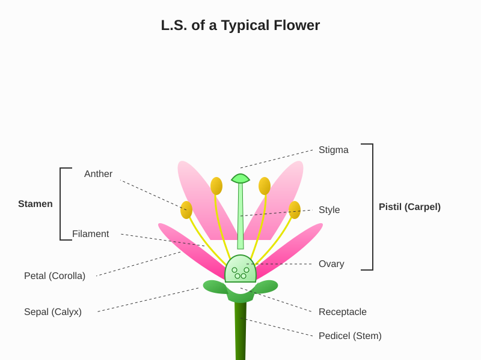
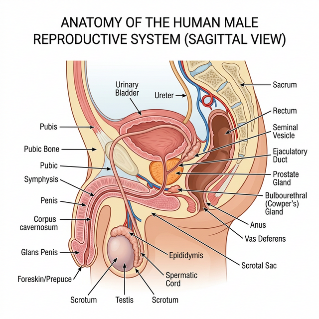
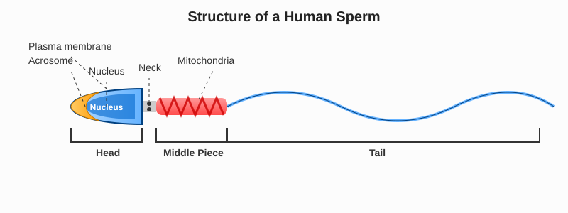
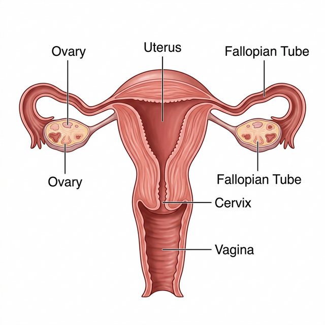
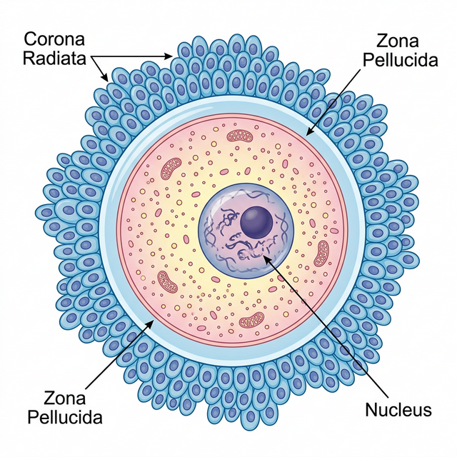
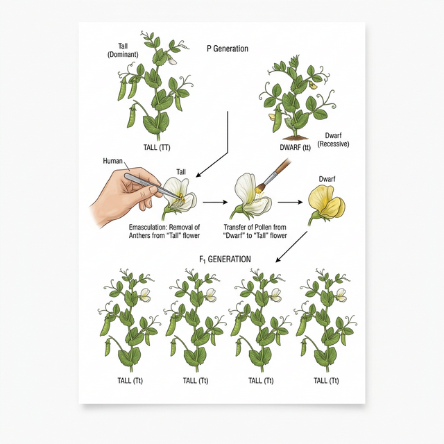
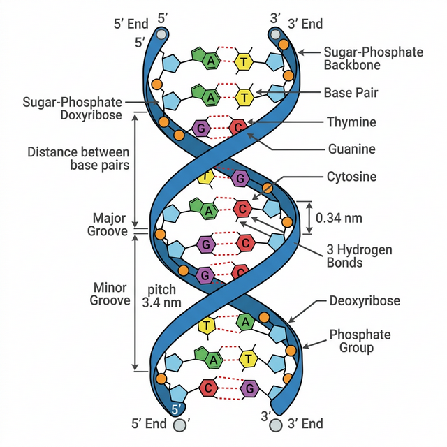

Chapter 1: Sexual Reproduction in Flowering Plants
Introduction
Sexual reproduction in flowering plants (angiosperms) involves the formation of male and female gametes and their fusion to form a zygote, which develops into an embryo. The flower is the fascinating reproductive organ of angiosperms.
Flower Structure
A typical flower consists of four main whorls arranged on a swollen end of the stalk (receptacle):
- Calyx: The outermost whorl consisting of sepals.
- Corolla: The whorl of petals, typically brightly colored to attract pollinators.
- Androecium: The male reproductive whorl, consisting of stamens.
- Gynoecium: The female reproductive whorl, consisting of carpels (pistils).

Development of Male Gametophyte
The stamen consists of a long, slender stalk called the filament and a bilobed, pollen-bearing structure called the anther. Inside the anther, microsporangia develop and become pollen sacs containing pollen grains. The process of formation of microspores from a pollen mother cell (PMC) through meiosis is called microsporogenesis.
Pollen grains represent the male gametophytes. They have a tough outer layer (exine) and an inner layer (intine). A mature pollen grain contains two cells: the vegetative cell and the generative cell.
Development of Female Gametophyte
The gynoecium represents the female reproductive part. A single pistil consists of three parts: stigma, style, and ovary. Inside the ovarian cavity, ovules (megasporangia) are present.
The formation of megaspores from the megaspore mother cell (MMC) is called megasporogenesis. Usually, one of the four megaspores remains functional and develops into the female gametophyte (embryo sac), while the other three degenerate. A typical mature angiosperm embryo sac is 8-nucleate and 7-celled.
Pollination
Pollination is the transfer of pollen grains to the stigma of a pistil.
- Autogamy: Transfer of pollen within the same flower.
- Geitonogamy: Transfer of pollen from the anther of one flower to the stigma of another flower on the same plant.
- Xenogamy: Transfer of pollen from the anther to the stigma of a different plant (cross-pollination).
Agents of Pollination
- Abiotic: Wind (anemophily), Water (hydrophily)
- Biotic: Insects (entomophily), Birds (ornithophily), Bats (chiropterophily), etc.
Outbreeding Devices
Plants have developed several mechanisms to discourage self-pollination and encourage cross-pollination, such as non-synchronization in pollen release and stigma receptivity, self-incompatibility, and production of unisexual flowers.
Pollen-Pistil Interaction
It encompasses all the events from pollen deposition on the stigma until the pollen tube enters the ovule. This is a dynamic process involving pollen recognition followed by promotion or inhibition of the pollen.
Double Fertilization
After entering one of the synergids, the pollen tube releases the two male gametes.
- Syngamy: One male gamete fuses with the egg cell to form the zygote (diploid, \(2n\)).
- Triple Fusion: The other male gamete fuses with the two polar nuclei in the central cell to produce a Primary Endosperm Nucleus (PEN) (triploid, \(3n\)).
Since two types of fusions take place in an embryo sac, the phenomenon is termed Double Fertilization.
Post-Fertilization Events
Development of Endosperm and Embryo
The PEN develops into the endosperm, which provides nourishment to the developing embryo. The zygote divides to give rise to the embryo (proembryo \(\rightarrow\) globular \(\rightarrow\) heart-shaped \(\rightarrow\) mature embryo).
Development of Seed and Formation of Fruit
The ovules mature into seeds, and the ovary develops into a fruit. The transformation of ovules into seeds and ovary into fruit proceeds simultaneously. The wall of the ovary develops into the fruit wall called pericarp.
Significance of Seed and Fruit Formation
Seed formation guarantees the continuation of the species. Fruit formation protects the seeds and plays a vital role in their dispersal.
Special Modes of Reproduction
- Apomixis: The production of seeds without fertilization. It is a form of asexual reproduction that mimics sexual reproduction.
- Parthenocarpy: The development of fruit without fertilization (e.g., banana). These fruits are seedless.
- Polyembryony: The phenomenon of the occurrence of more than one embryo in a seed (e.g., Citrus, Mango).
Competency Based Questions
Q1. A plant has 24 chromosomes in its microspore mother cell. Calculate the number of chromosomes in its endosperm and syngids, respectively.
(A) 36 and 12
(B) 12 and 12
(C) 36 and 24
(D) 24 and 12
Answer and Explanation
Answer: (A) 36 and 12Explanation:
The microspore mother cell (MMC) is diploid (\(2n\)).
Given: \(2n = 24\)
Therefore, the haploid number of chromosomes (\(n\)) is \(n = 12\).
The endosperm is triploid (\(3n\)):
$$ 3n = 3 \times 12 = 36 \text{ chromosomes} $$
The synergids are haploid (\(n\)):
$$ n = 12 \text{ chromosomes} $$
Hence, the number of chromosomes in the endosperm is \(36\) and in the synergids is \(12\).
Q2. How many meiotic divisions are required to produce 200 seeds in a typical angiosperm? Explain with mathematical steps.
Answer and Explanation
Answer: 250 meiotic divisionsExplanation:
To form one seed, we need one pollen grain (male gamete) and one egg cell (female gamete).
-
To produce female gametes (egg cells):
One megaspore mother cell (MMC) undergoes one meiotic division to form four megaspores, out of which only one is functional and forms the egg cell.
So, for 200 egg cells, we need:
$$ 200 \times 1 = 200 \text{ meiotic divisions} $$ -
To produce male gametes (pollen grains):
One microspore mother cell undergoes one meiotic division to produce a pollen tetrad (4 pollen grains).
So, for 200 pollen grains, we need:
$$ \frac{200}{4} = 50 \text{ meiotic divisions} $$
Total meiotic divisions required:
$$ \text{Total divisions} = \text{Meiosis for female gametes} + \text{Meiosis for male gametes} $$
$$ \text{Total divisions} = 200 + 50 = 250 $$
Q3. If a plant exhibits self-incompatibility, which of the following processes is directly hindered?
(A) Megasporogenesis
(B) Microsporogenesis
(C) Pollen-pistil interaction leading to pollen tube growth
(D) Syngamy of female gametes with male gametes from a different plant
Answer and Explanation
Answer: (C) Pollen-pistil interaction leading to pollen tube growthExplanation:
Self-incompatibility is a genetic mechanism that prevents self-pollen (from the same flower or other flowers of the same plant) from fertilizing the ovules by inhibiting pollen germination or pollen tube growth in the pistil during pollen-pistil interaction. It does not hinder the formation of gametes (megasporogenesis or microsporogenesis) or cross-fertilization.
Q4. A farmer observed that his Citrus crop produced seeds that gave rise to multiple seedlings from a single seed. Identify the phenomenon and state its genetic consequence on the offspring.
Answer and Explanation
Answer: PolyembryonyExplanation:
The phenomenon where more than one embryo occurs in a single seed is called polyembryony. In many Citrus and mango varieties, some of the nucellar cells surrounding the embryo sac start dividing, protrude into the embryo sac and develop into embryos.
Genetic Consequence: Since these embryos arise directly from the maternal sporophytic tissue (nucellus) without meiosis or syngamy, they are genetically identical to the parent plant (clones). This preserves the desirable genetic traits of the parent without segregation.
Q5. The graph below shows the rate of pollen tube growth for two different pollen grains (Pollen A and Pollen B) on the same stigma over time. Based on your understanding of pollen-pistil interaction, what can you infer?
(Assume Pollen A shows continuous rapid growth, while Pollen B germinates but stops growing shortly after).
(A) Pollen A is incompatible, while Pollen B is compatible.
(B) Both Pollen A and Pollen B are from the same plant (self-pollen) in a self-incompatible species.
(C) Pollen A is from a compatible species, while Pollen B is from an incompatible species or rejected due to self-incompatibility.
(D) Both Pollen A and Pollen B lack a vegetative cell.
Answer and Explanation
Answer: (C) Pollen A is from a compatible species, while Pollen B is from an incompatible species or rejected due to self-incompatibility.Explanation:
During pollen-pistil interaction, the pistil has the ability to recognize the pollen, whether it is of the right type (compatible) or of the wrong type (incompatible). If it is “right,” the pistil accepts the pollen and promotes post-pollination events that lead to fertilization (Pollen A). If the pollen is “wrong,” the pistil rejects the pollen by preventing pollen germination on the stigma or pollen tube growth in the style (Pollen B).
Chapter 2: Human Reproduction
Introduction
Humans are sexually reproducing and viviparous. The reproductive events in humans include formation of gametes (gametogenesis), i.e., sperms in males and ovum in females, transfer of sperms into the female genital tract (insemination), and fusion of male and female gametes (fertilisation) leading to formation of zygote. This is followed by development of blastocyst and its attachment to the uterine wall (implantation), embryonic development (gestation), and delivery of the baby (parturition).
The Male Reproductive System
The male reproductive system is located in the pelvis region. It includes a pair of testes along with accessory ducts, glands, and the external genitalia. The testes are situated outside the abdominal cavity within a pouch called scrotum. The scrotum helps in maintaining the low temperature of the testes (2–2.5°C lower than the normal internal body temperature) necessary for spermatogenesis.
Each testis has about 250 compartments called testicular lobules. Each lobule contains 1 to 3 highly coiled seminiferous tubules in which sperms are produced.


The Female Reproductive System
The female reproductive system consists of a pair of ovaries along with a pair of oviducts (fallopian tubes), uterus, cervix, vagina, and the external genitalia located in pelvic region. Ovaries are the primary female sex organs that produce the female gamete (ovum) and several steroid hormones (ovarian hormones).
The oviducts, uterus, and vagina constitute the female accessory ducts. Each fallopian tube is about 10-12 cm long and extends from the periphery of each ovary to the uterus. The part closer to the ovary is the funnel-shaped infundibulum.

Gametogenesis
The primary sex organs – the testis in the males and the ovaries in the females – produce gametes, i.e., sperms and ovum, respectively, by the process called gametogenesis.
- Spermatogenesis: In testis, the immature male germ cells (spermatogonia) produce sperms by spermatogenesis that begins at puberty.
- Oogenesis: The process of formation of a mature female gamete is called oogenesis, which is markedly different from spermatogenesis. Oogenesis is initiated during the embryonic development stage.

Menstrual Cycle
The reproductive cycle in the female primates (e.g., monkeys, apes, and human beings) is called menstrual cycle. The cycle starts with the menstrual phase, followed by the follicular phase (proliferative phase), ovulatory phase, and the luteal phase (secretory phase). Ovulation (release of ovum) occurs during the ovulatory phase, usually around the 14th day of a 28-day cycle, driven by the surge of Luteinizing Hormone (LH).
Fertilisation and Implantation
During copulation (coitus), semen is released by the penis into the vagina (insemination). The motile sperms swim rapidly, pass through the cervix, enter into the uterus, and finally reach the ampullary region of the fallopian tube. The ovum released by the ovary is also transported to the ampullary region where fertilisation takes place.
The process of fusion of a sperm with an ovum is called fertilisation. The mitotic division starts as the zygote moves through the isthmus of the oviduct towards the uterus and forms 2, 4, 8, 16 daughter cells called blastomeres. The embryo with 8 to 16 blastomeres is called a morula. The morula continues to divide and transforms into a blastocyst.
The blastomeres in the blastocyst are arranged into an outer layer called trophoblast and an inner group of cells attached to trophoblast called the inner cell mass. The trophoblast layer then gets attached to the endometrium, leading to implantation, which leads to pregnancy.
Pregnancy and Embryonic Development
After implantation, finger-like projections appear on the trophoblast called chorionic villi. The chorionic villi and uterine tissue become interdigitated with each other and jointly form a structural and functional unit between developing embryo (foetus) and maternal body called placenta.
Parturition and Lactation
The average duration of human pregnancy is about 9 months, which is called the gestation period. Vigorous contraction of the uterus at the end of pregnancy causes expulsion/delivery of the foetus. This process of delivery of the foetus is called parturition. The mammary glands of the female undergo differentiation during pregnancy and start producing milk towards the end of pregnancy by the process called lactation.
Competency Based Questions
Q1. A man has a body temperature of 37°C. For healthy spermatogenesis, the temperature of his testes must be maintained at approximately:
(A) 34.5°C to 35°C
(B) 37°C to 37.5°C
(C) 38.5°C to 39°C
(D) 32°C to 32.5°C
Answer and Explanation
Answer: (A) 34.5°C to 35°CExplanation:
The scrotum helps in maintaining the low temperature of the testes, which is 2–2.5°C lower than the normal internal body temperature.
Calculation:
$$ \text{Normal Body Temp } = 37°\text{C} $$
$$ \text{Required Temp for Testes } = 37 - 2 = 35°\text{C} $$
$$ \text{Required Temp for Testes } = 37 - 2.5 = 34.5°\text{C} $$
Thus, the temperature is maintained around 34.5°C to 35.0°C.
Q2. During spermatogenesis, a primary spermatocyte undergoes meiosis I to form secondary spermatocytes, which then undergo meiosis II. If a human primary spermatocyte contains 46 chromosomes and a DNA content of 4C, what will be the chromosome number (n) and DNA content (C) of a spermatid?
(A) 23 chromosomes, 2C DNA
(B) 46 chromosomes, 2C DNA
(C) 23 chromosomes, 1C DNA
(D) 46 chromosomes, 4C DNA
Answer and Explanation
Answer: (C) 23 chromosomes, 1C DNAExplanation:
A primary spermatocyte is diploid and its DNA has duplicated before meiosis I (2n = 46, DNA = 4C).
After Meiosis I, homologous chromosomes separate. The secondary spermatocytes are haploid but have duplicated chromatids (n = 23, DNA = 2C).
After Meiosis II, sister chromatids separate. The resulting spermatids are haploid with un-duplicated chromatids (n = 23, DNA = 1C).
Q3. If a woman’s menstrual cycle is consistently 32 days long, on which approximate day does ovulation most likely occur?
Answer and Explanation
Answer: Day 18Explanation:
The luteal (secretory) phase of the menstrual cycle is relatively constant across most women, typically lasting about 14 days from ovulation to the onset of the next menstruation.
To find the day of ovulation in a 32-day cycle:
$$ \text{Day of Ovulation} = \text{Length of Cycle} - \text{Length of Luteal Phase} $$
$$ \text{Day of Ovulation} = 32 - 14 = 18 $$
Ovulation most likely occurs on or around Day 18.
Q4. A couple is facing infertility issues due to very low sperm motility (asthenozoospermia). Explain why normal sperm motility is essential for fertilization.
Answer and Explanation
Answer: Normal motility is required to reach the ampullary region of the fallopian tube.Explanation:
Fertilization occurs in the ampullary region of the fallopian tube. Upon insemination, the sperms are deposited in the vagina. They must actively swim through the cervix, traverse the entire length of the uterus, and finally reach the fallopian tube. Without vigorous motility provided by the sperm’s tail (flagellum) powered by mitochondria in its middle piece, the sperms cannot reach the ovum in time, resulting in failed fertilization.
Q5. The hormone hCG (human chorionic gonadotropin) is often detected in pregnancy tests. What is its source and primary function in early pregnancy?
Answer and Explanation
Answer: Source: Placenta (Trophoblast cells). Function: Maintains Corpus Luteum.Explanation:
After implantation, the trophoblast cells (which later form part of the placenta) start secreting hCG.
The primary function of hCG is to mimic LH and rescue the corpus luteum from degenerating. The corpus luteum then continues to secrete progesterone, which is essential to maintain the inner lining of the uterus (endometrium), thus supporting the pregnancy.
Chapter 3: Reproductive Health
Introduction
The term simply refers to healthy reproductive organs with normal functions. However, it has a broader perspective and includes the emotional and social aspects of reproduction. According to the World Health Organisation (WHO), reproductive health means a total well-being in all aspects of reproduction, i.e., physical, emotional, behavioural, and social.
Need for Reproductive Health
India is among the first countries in the world to initiate action plans and programmes at a national level to attain total reproductive health as a social goal. These programmes, called ‘family planning’, were initiated in 1951. Creating awareness about sex-related aspects, providing sex education in schools, and preventing sex abuse and sex-related crimes are primary steps toward a reproductive healthy society.
Amniocentesis
Amniocentesis is a fetal sex determination and disorder diagnostic test based on the chromosomal pattern in the amniotic fluid surrounding the developing embryo. There is a statutory ban on amniocentesis for sex determination to legally check increasing female foeticides. However, it is a crucial test for detecting genetic disorders like Down syndrome, haemophilia, sickle-cell anemia, etc., to determine the survivability of the fetus.
Population Explosion and Birth Control
With rapid advancements in medicine and an increase in life expectancy, the world population has grown rapidly. To check population growth rate, it is crucial to motivate smaller families by using various contraceptive methods.
Methods of Contraception
An ideal contraceptive should be user-friendly, easily available, effective, and reversible with no or least side effects.
- Natural/Traditional Methods: Work on the principle of avoiding chances of ovum and sperms meeting (e.g., Periodic abstinence, withdrawal method, lactational amenorrhea).
- Barrier Methods: Sperms are prevented from physically meeting with the ovum with the help of barriers (e.g., Condoms, diaphragms, cervical caps, vaults). Condoms also protect against Sexually Transmitted Diseases (STDs) and AIDS.
- Intra Uterine Devices (IUDs): Inserted by doctors into the uterus through the vagina. These include non-medicated IUDs, copper-releasing IUDs (CuT, Cu7), and hormone-releasing IUDs. They increase phagocytosis of sperms within the uterus or suppress sperm motility.
- Oral Contraceptives: Small doses of either progestogens or progestogen–estrogen combinations generally taken by females in the form of pills. They inhibit ovulation and implantation.
- Injectables and Implants: Progestogens alone or in combination with estrogen can be used by females as injections or implants under the skin.
- Surgical Methods: Terminal methods to block gamete transport, thereby preventing conception. Vasectomy in males and Tubectomy in females.
Medical Termination of Pregnancy (MTP)
Intentional or voluntary termination of pregnancy before full term is called Medical Termination of Pregnancy (MTP) or induced abortion. MTP is essential in cases where continuation of pregnancy could be harmful or fatal either to the mother or to the foetus. MTP is considered relatively safe during the first trimester (up to 12 weeks of pregnancy).
Sexually Transmitted Diseases (STDs)
Diseases or infections which are transmitted through sexual intercourse are collectively called sexually transmitted diseases (STD) or venereal diseases (VD) or reproductive tract infections (RTI). Examples include gonorrhoea, syphilis, genital herpes, chlamydiasis, genital warts, trichomoniasis, hepatitis-B, and HIV (leading to AIDS). Prevention:
- Avoid sex with unknown partners/multiple partners.
- Always try to use condoms during coitus.
- In case of doubt, consult a qualified doctor for early detection and get complete treatment if diagnosed.
Infertility and Assisted Reproductive Technologies (ART)
Infertility is the inability to conceive or produce children even after 2 years of unprotected sexual cohabitation. When corrective treatments aren’t possible, couples can be assisted via ART.
- In Vitro Fertilisation (IVF): Fertilisation outside the body in almost similar conditions as that in the body, followed by embryo transfer. Known as the “test tube baby” programme.
- ZIFT: Zygote Intra Fallopian Transfer - Transfer of early embryos (up to 8 blastomeres) into the fallopian tube.
- IUT: Intra Uterine Transfer - Transfer of embryos with more than 8 blastomeres into the uterus.
- GIFT: Gamete Intra Fallopian Transfer - Transfer of an ovum collected from a donor into the fallopian tube of another female who cannot produce one but can provide a suitable environment for fertilisation.
Competency Based Questions
Q1. According to the WHO index of contraceptive failures, the Pearl Index represents the number of pregnancies per 100 women-years of exposure. If a new oral pill was tested on 500 women for 2 years, and 10 women became pregnant in that timeframe, what is the Pearl Index of this pill?
(A) 1
(B) 2
(C) 5
(D) 10
Answer and Explanation
Answer: (A) 1Explanation:
The Pearl Index is calculated as:
$$ \text{Pearl Index} = \frac{\text{Number of pregnancies} \times 100}{\text{Total months or years of exposure (women-years)}} $$
Total exposure in women-years = \(500 \text{ women} \times 2 \text{ years} = 1000 \text{ women-years}\).
$$ \text{Pearl Index} = \frac{10 \times 100}{1000} = \frac{1000}{1000} = 1 $$
This implies a 1% failure rate per year.
Q2. Lactational amenorrhea is effective only up to a maximum of six months following parturition. Why is it not a guaranteed method of contraception beyond this period?
Answer and Explanation
Answer: Intense nursing suppresses gonadotropins temporarily.Explanation:
Lactational amenorrhea is based on the fact that ovulation and the menstrual cycle do not occur during the period of intense lactation following parturition. High levels of prolactin from nursing suppress the release of GnRH, LH, and FSH. However, as the infant’s diet diversifies after about six months, nursing frequency typically decreases, prolactin levels drop, and ovulation can resume unpredictably even before the first menstruation returns.
Q3. Differentiate between ZIFT and GIFT as Assisted Reproductive Technologies.
Answer and Explanation
Answer: ZIFT transfers a zygote; GIFT transfers an unfertilized ovum.Explanation:
ZIFT (Zygote Intra Fallopian Transfer): Fertilization occurs in vitro (outside the body). The resulting zygote or early embryo (up to 8 blastomeres) is then transferred into the fallopian tube.
GIFT (Gamete Intra Fallopian Transfer): Unfertilized gametes (an ovum and sperms) are transferred into the fallopian tube in vivo. Fertilization occurs inside the female’s fallopian tube. It is generally used when a female cannot produce expected ova but can offer an environment for fertilization and gestation.
Q4. A copper-releasing IUD like CuT is inserted into a patient’s uterus. Explain the mechanism by which it prevents pregnancy.
Answer and Explanation
Answer: Copper ions suppress sperm motility and fertilizing capacity.Explanation:
IUDs work primarily by increasing the phagocytosis of sperms within the uterus. Specifically, the copper ions (\(Cu^{2+}\)) released continuously from Copper-T (CuT) act as strong spermicides. They suppress sperm motility, decreasing their swimming speed drastically, and reduce the fertilizing capacity of the sperms, preventing them from meeting the ovum.
Q5. Explain why amniocentesis is strictly regulated in many countries, yet remains an essential diagnostic tool for specific high-risk pregnancies.
Answer and Explanation
Answer: Regulated to prevent sex-selective abortion; essential for genetic screening.Explanation:
Amniocentesis involves analyzing the chromosomal pattern of fetal cells found in the amniotic fluid. It is strictly regulated or banned for sex determination to prevent female foeticide, which skews the demographic sex ratio.
However, it is essential because it is a definitive method to detect dangerous genetic abnormalities and chromosomal defects in the developing fetus, such as Down’s syndrome, sickle-cell anemia, or haemophilia, giving parents time for life-saving medical planning or MTP.
Chapter 4: Principles of Inheritance and Variation
Introduction
Genetics is the subject that deals with the inheritance, as well as the variation of characters from parents to offspring. Inheritance is the process by which characters are passed on from parent to progeny; it is the basis of heredity.
Mendel’s Laws of Inheritance
Gregor Mendel, conducted hybridization experiments on garden peas (Pisum sativum) for seven years (1856-1863) and proposed the laws of inheritance in living organisms. He chose traits that had two contrasting characteristics, such as stem height (tall/dwarf), seed colour (yellow/green), etc.

Inheritance of One Gene (Monohybrid Cross)
Mendel crossed tall and dwarf pea plants and obtained all tall plants in the \(F_1\) generation. When he self-pollinated the \(F_1\) tall plants, he observed both tall and dwarf plants in the \(F_2\) generation in a ratio of 3:1 (Phenotypic ratio) and 1:2:1 (Genotypic ratio).
Based on his observations on monohybrid crosses, Mendel proposed two general rules:
- Law of Dominance: Characters are controlled by discrete units called factors (genes). Factors occur in pairs. In a dissimilar pair, one member dominates (dominant) the other (recessive).
- Law of Segregation: The alleles do not show any blending. During gamete formation, the allelic pair segregates from each other such that a gamete receives only one of the two factors.
Deviations from Mendelism
- Incomplete Dominance: When the \(F_1\) phenotype does not resemble either of the two parents and is in between the two. Example: Flower color in snapdragon (Red \(RR\) crossed with White \(rr\) yields Pink \(Rr\)). The phenotypic ratio in \(F_2\) is \(1:2:1\).
- Co-dominance: When both alleles of a pair are fully expressed in a heterozygote. Example: ABO blood grouping in humans where alleles \(I^A\) and \(I^B\) are co-dominant, resulting in AB blood type.
- Multiple Alleles: When a character is controlled by more than two alleles. Example: ABO blood grouping is controlled by three alleles (\(I^A\), \(I^B\), \(i\)).
- Pleiotropy: Where a single gene exhibits multiple phenotypic expressions. Example: Phenylketonuria.
Two Gene Inheritance and Chromosomal Theory
Mendel also crossed plants differing in two traits (Dihybrid Cross), observing a 9:3:3:1 phenotypic ratio in \(F_2\), leading to the Law of Independent Assortment. It states that the inheritance of one pair of traits is independent of another pair.
Later, the Chromosomal Theory of Inheritance was proposed by Sutton and Boveri (1902). They noted that the behaviour of chromosomes is parallel to the behaviour of genes.
Linkage and Recombination: T.H. Morgan formulated the concept of linkage based on his work on Drosophila. Linkage refers to the physical association of genes on a chromosome, while recombination describes the generation of non-parental gene combinations.
Polygenic Inheritance
Traits that are controlled by three or more genes are called polygenic traits. Examples include human skin colour and human height. The phenotype reflects the contribution of each allele (additive effect), and the environment often influences the trait.
Sex Determination
The mechanism of sex determination relies on specific chromosomes known as sex chromosomes.
- Male heterogamety: Human males have XY chromosomes, producing X and Y sperms (50% each). Females have XX.
- Female heterogamety: In birds, females have ZW chromosomes, whereas males have ZZ.
- Haplodiploidy: In honey bees, females (queens, workers) are diploid (32 chromosomes) originating from fertilized eggs, and males (drones) are haploid (16 chromosomes) developing parthenogenetically from unfertilized eggs.
Genetic Disorders
Mendelian Disorders
Determined by alteration or mutation in a single gene. They follow Mendelian inheritance patterns.
- Haemophilia: Sex-linked recessive disease showing defective blood coagulation. A slight cut can lead to non-stop bleeding. A carrier female passes the disease to sons.
- Colour Blindness: Sex-linked recessive disorder where red-green discrimination is impaired. More common in males.
- Thalassemia: Autosomal recessive blood disease involving reduced synthesis of globin chains of hemoglobin, causing anemia.
Chromosomal Disorders
Caused by absence, excess, or abnormal arrangement of one or more chromosomes.
- Down’s Syndrome: Autosomal trisomy of chromosome 21 (resulting in 47 chromosomes).
- Turner’s Syndrome: Absence of one X chromosome in females (\(45,\text{XO}\)). Females are sterile and lack secondary sexual characters.
- Klinefelter’s Syndrome: Presence of an additional copy of X chromosome in males (\(47,\text{XXY}\)). Males are sterile with overall masculine development along with feminine features (e.g., gynecomastia).
Competency Based Questions
Q1. In a genetic mapping experiment, the recombination frequencies between three linked genes (A, B, and C) are as follows: A and B = \(15\%\), B and C = \(8\%\), A and C = \(23\%\). What is the correct linear sequence of these genes on the chromosome?
(A) A – C – B
(B) B – A – C
(C) A – B – C
(D) C – B – A
Answer and Explanation
Answer: (C) A – B – C or (D) C – B – AExplanation:
Recombination frequency is directly proportional to the physical distance between genes on a chromosome (1% recombination = 1 centiMorgan).
Distance A to C = 23 (The largest, hence A and C are at the extremes).
Distance A to B = 15.
Distance B to C = 8.
Since \(15 + 8 = 23\), B must be exactly in the middle of A and C.
The sequence is A—B—C or C—B—A.
Q2. A woman whose father was colour blind marries a man with normal vision. Assuming \(X^C\) represents the mutant allele, what is the probability that their first son will be colour blind? mathematically justify your answer.
Answer and Explanation
Answer: 50% probabilityExplanation:
Colour blindness is an X-linked recessive trait.
Woman’s father was colour blind: Genotype \(X^C Y\). Thus, he must have passed his \(X^C\) chromosome to his daughter.
Woman’s genotype: \(X^C X\) (Carrier, normal vision).
Man with normal vision: Genotype \(XY\).
Cross: \(X^C X \times XY\)
Possible offspring genotypes:
- Daughters: \(X^C X\) (Carrier) and \(XX\) (Normal).
- Sons: \(X^C Y\) (Colour blind) and \(XY\) (Normal).
Looking exclusively at the sons, there are 2 possibilities: one is normal, one is colour blind.
$$ \text{Probability} = \frac{1}{2} = 0.5 \text{ or } 50\% $$
Q3. Calculate the number of Barr bodies present in the somatic cell of an individual diagnosed with Klinefelter’s Syndrome.
Answer and Explanation
Answer: One Barr body.Explanation:
A Barr body is the heavily methylated, inactivated X chromosome typically found in female mammalian cells. The number of Barr bodies follows the \((N - 1)\) rule, where \(N\) is the total number of X chromosomes in the cell.
An individual with Klinefelter’s syndrome is a male with karyotype 47, XXY.
$$ N = 2 \text{ (Since there are two X chromosomes)} $$
$$ \text{Number of Barr bodies} = 2 - 1 = 1 $$
Q4. A cross was made between two heterozygotes (\(AaBb \times AaBb\)) exhibiting independent assortment. What fraction of the \(F_2\) progeny will be completely homozygous (either dominant or recessive for both traits)?
Answer and Explanation
Answer: \( \frac{1}{4} \) or \( \frac{4}{16} \)Explanation:
Using a Punnett square for a dihybrid cross (\(AaBb \times AaBb\)), there are 16 total offspring combinations.
Completely homozygous possibilities are:
- \(AABB\)
- \(AAbb\)
- \(aaBB\)
- \(aabb\)
Each of these specific genotypes occurs with a probability of:
$$ P(AA) \times P(BB) = \frac{1}{4} \times \frac{1}{4} = \frac{1}{16} $$
Since there are 4 such genotypes:
$$ \text{Total fraction} = \frac{1}{16} \times 4 = \frac{4}{16} = \frac{1}{4} $$
Q5. How does the concept of pleiotropy challenge Mendel’s initial assumption that one gene influences only one specific trait? Give one human example to support your answer.
Answer and Explanation
Answer: A single defective gene affects multiple unrelated phenotypic traits.Explanation:
Mendel believed that one gene controlled one character completely independently. Pleiotropy directly challenges this by showing that a single gene mutation can have multiple, seemingly unrelated phenotypic effects spread across different systems.
Example: Phenylketonuria. A mutation in the gene coding for the enzyme phenylalanine hydroxylase causes the primary metabolic defect. However, it leads to multiple phenotypic effects such as mental retardation, characteristic body odor, and reduced hair and skin pigmentation.
Chapter 5: Molecular Basis of Inheritance
The DNA
Deoxyribonucleic acid (DNA) and Ribonucleic acid (RNA) are the two types of nucleic acids found in living systems. DNA acts as the genetic material in most organisms. RNA mostly functions as a messenger, adapter, structural, and catalytic molecule.
Structure of Polynucleotide Chain
A nucleotide has three components: a nitrogenous base, a pentose sugar (ribose in RNA, and deoxyribose in DNA), and a phosphate group. There are two types of nitrogenous bases:
- Purines: Adenine (A) and Guanine (G).
- Pyrimidines: Cytosine (C), Thymine (T, only in DNA), and Uracil (U, only in RNA). A nitrogenous base is linked to the OH of 1’C pentose sugar through an N-glycosidic linkage to form a nucleoside. When a phosphate group is linked to the OH of 5’C of a nucleoside through a phosphoester linkage, a corresponding nucleotide is formed.
Double Helix Model
James Watson and Francis Crick (1953), based on X-ray diffraction data produced by Maurice Wilkins and Rosalind Franklin, proposed the Double Helix model for the structure of DNA.

Key features:
- Made of two polynucleotide chains, with a sugar-phosphate backbone.
- The two chains have anti-parallel polarity (one is \(5’ \rightarrow 3’\), the other is \(3’ \rightarrow 5’\)).
- Bases project inside and are paired through Hydrogen bonds (A with T with two H-bonds; G with C with three H-bonds).
- The two chains are coiled in a right-handed fashion. Erwin Chargaff’s rule states that for a double-stranded DNA, the ratios between Adenine and Thymine, and Guanine and Cytosine are constant and equal one.
DNA Packaging
In prokaryotes like E. coli, DNA is held together with some proteins in a region called the nucleoid. In eukaryotes, there is a set of positively charged, basic proteins called histones. Histones are organized to form a unit of eight molecules called a histone octamer. The negatively charged DNA is wrapped around the positively charged histone octamer to form a structure called a nucleosome. Nucleosomes constitute the repeating unit of a structure in the nucleus called chromatin.
DNA Replication
Watson and Crick suggested a semi-conservative mechanism of replication. Matthew Meselson and Franklin Stahl (1958) proved it experimentally using heavy nitrogen (\(^{15}N\)) and E. coli. In eukaryotic replication, multiple origins of replication exist. The main enzyme is DNA-dependent DNA polymerase, which catalyzes polymerization highly efficiently in the \(5’ \rightarrow 3’\) direction. Consequently, on one strand (template with polarity \(3’ \rightarrow 5’\)), replication is continuous (leading strand), while on the other (\(5’ \rightarrow 3’\)), it is discontinuous (lagging strand). The discontinuous fragments (Okazaki fragments) are joined by DNA ligase.
Central Dogma
The Central Dogma in molecular biology states the flow of genetic information: DNA \(\xrightarrow{\text{Transcription}}\) mRNA \(\xrightarrow{\text{Translation}}\) Protein
Transcription
The process of copying genetic information from one strand of the DNA into RNA is termed transcription. A transcription unit in DNA is defined primarily by three regions:
- A Promoter
- The Structural gene
- A Terminator The enzyme DNA-dependent RNA polymerase catalyzes polymerization in only one direction, i.e., \(5’ \rightarrow 3’\). Therefore, the DNA strand with polarity \(3’ \rightarrow 5’\) acts as a template strand.
In eukaryotes, the primary transcript (hnRNA) undergoes processing:
- Splicing: Introns are removed and exons are joined.
- Capping: Methyl guanosine triphosphate is added to the 5’-end.
- Tailing: Polyadenylate tail (200-300 adenylate residues) is added to the 3’-end.
Genetic Code and Translation
The genetic code directs the sequence of amino acids during synthesis of proteins. Features of genetic code:
- It is a triplet (61 codons code for amino acids, 3 are stop codons).
- It is unambiguous and specific (one codon codes for only one amino acid).
- It is degenerate (some amino acids are coded by more than one codon).
- It is universal.
Translation refers to the process of polymerization of amino acids to form a polypeptide. The order and sequence of amino acids are defined by the sequence of bases in the mRNA. The cellular factory responsible for synthesizing proteins is the ribosome.
Regulation of Gene Expression
In prokaryotes, control of the rate of transcriptional initiation is the predominant site for control of gene expression. Lac Operon: The lac operon consists of one regulatory gene (the i gene, codes for the repressor) and three structural genes (z, y, and a). It is an inducible operon. Lactose acts as the inducer by binding to the repressor protein, bringing about a conformational change and preventing it from binding to the operator region, allowing RNA polymerase to transcribe the operon.
Human Genome Project (HGP) and DNA Fingerprinting
HGP (1990-2003) mapped the complete human genome (~\(3 \times 10^9\) bp). Key findings include that humans have approximately 30,000 genes, and 99.9% of DNA is exactly the same in all people. DNA Fingerprinting: Developed by Alec Jeffreys. It involves identifying differences in some specific regions in DNA sequence called repetitive DNA. It relies on Variable Number of Tandem Repeats (VNTRs) as probes that show very high degrees of polymorphism.
Competency Based Questions
Q1. Analysis of a double-stranded DNA sample shows that it contains 18% Cytosine. Calculate the percentage of Adenine in this sample based on Chargaff’s rule.
(A) 18%
(B) 32%
(C) 36%
(D) 64%
Answer and Explanation
Answer: (B) 32%Explanation:
According to Chargaff’s rule, in a double-stranded DNA molecule:
$$ \%C = \%G $$
$$ \%A = \%T $$
Therefore:
$$ \%C + \%G + \%A + \%T = 100\% $$
Given \(\%C = 18\%\), then \(\%G = 18\%\).
$$ \%C + \%G = 18\% + 18\% = 36\% $$
The remaining percentage must be shared equally by Adenine and Thymine:
$$ 100\% - 36\% = 64\% $$
$$ \%A = \%T = \frac{64\%}{2} = 32\% $$
Q2. During Meselson and Stahl’s experiment, E. coli grown in \(^{15}N\) medium was shifted to a \(^{14}N\) medium. If the replication time is 20 minutes, what would be the ratio of hybrid DNA to light DNA after 60 minutes?
Answer and Explanation
Answer: 1:3 (or 2 hybrid : 6 light strands)Explanation:
After 0 minutes: 100% heavy DNA (\(^{15}N-^{15}N\))
After 20 mins (1st generation): All DNA molecules are hybrid (\(^{15}N-^{14}N\)). Total = 2 molecules.
After 40 mins (2nd generation): 2 hybrid molecules and 2 light molecules (\(^{14}N-^{14}N\)). Total = 4 molecules.
After 60 mins (3rd generation): 2 hybrid molecules and 6 light molecules. Total = 8 molecules.
The number of hybrid molecules remains constant at 2 because there are only 2 original heavy \(^{15}N\) strands in the pool. The rest are newly synthesized light strands.
Ratio of Hybrid : Light = \(2 : 6 = 1 : 3\).
Q3. If the sequence of the coding strand in a transcription unit is written as follows:
5' - ATG CCT GAG CGT - 3'
Write down the sequence of the mRNA transcript.
Answer and Explanation
Answer: 5' - AUG CCU GAG CGU - 3'Explanation:
Since the coding strand does not code for anything but possesses the same sequence as the RNA (except that Thymine is replaced by Uracil), it’s a straightforward replacement.
Coding strand: 5' - ATG CCT GAG CGT - 3'
mRNA sequence: 5' - AUG CCU GAG CGU - 3'
Q4. The lac repressor is a tetrameric protein that binds to the operator sequence of the lac operon with a very high affinity (\(K_d \approx 10^{-13} M\)). Why does the addition of an inducer (like allolactose) successfully initiate transcription despite this high affinity?
Answer and Explanation
Answer: The inducer changes the structural conformation of the repressor.Explanation:
When allolactose (inducer) binds to the lac repressor protein, it acts as an allosteric effector. This binding induces a dramatic conformational change in the 3D structure of the repressor. The altered shape drastically lowers its binding affinity for the operator DNA sequence, causing the repressor to detach from the operator. With the operator free, RNA polymerase can now successfully bind to the promoter and transcribe the structural genes.
Q5. A geneticist synthesizes an artificial mRNA with purely repeating dinucleotides: 5'-UGUGUGUGUGUGUGUG-3'. In a cell-free translation system, how many different types of amino acids will make up the resulting polypeptide?
Answer and Explanation
Answer: Two different amino acids.Explanation:
Ribosomes read mRNA in non-overlapping triplets (codons) starting from the 5’ end.
Looking at the sequence: UGU GUG UGU GUG UGU GUG...
The codons are alternating exactly between UGU and GUG.
Since each specific codon calls for one specific amino acid, alternating UGU and GUG will bring alternating amino acids (Cysteine and Valine, respectively). Therefore, the polypeptide will be composed of exactly 2 different types of amino acids.
Chapter 6: Evolution
Origin of Life
Evolutionary biology is the study of the history of life forms on earth. To understand changes in flora and fauna, we must understand the origin of life itself.
- Big Bang Theory: Explains the origin of the universe as a singular huge explosion unimaginable in physical terms. The earth is believed to have been formed about 4.5 billion years back.
- Oparin-Haldane Theory: Proposed that the first form of life could have come from pre-existing non-living organic molecules (e.g., RNA, protein, etc.) and that formation of life was preceded by chemical evolution.
- Miller-Urey Experiment (1953): Simulated conditions of early earth (high temperature, volcanic storms, reducing atmosphere containing \(CH_4\), \(NH_3\), \(H_2\), \(H_2O\)) and observed the formation of amino acids, supporting chemical evolution.
Evidences for Evolution
- Paleontological Evidence: Fossils are remains of hard parts of life-forms found in rocks. Different-aged rock sediments contain fossils of different life forms, indicating life forms varied over time.
- Comparative Anatomy and Morphology:
- Homologous Organs: Organs having fundamentally the same structure and origin but different functions (e.g., forelimbs of whales, bats, Cheetah, and human). Indicates divergent evolution.
- Analogous Organs: Organs having a similar function but different structure and origin (e.g., wings of butterfly and birds). Indicates convergent evolution.
- Biochemical Evidence: Similarities in proteins and genes among diverse organisms give clues to common ancestry.
Adaptive Radiation
The process of evolution of different species in a given geographical area starting from a point and literally radiating to other areas of geography (habitats) is called adaptive radiation.
- Darwin’s Finches: On passing through the Galapagos Islands, Darwin observed many varieties of finches. From the original seed-eating features, beak shapes adapted for insectivorous and vegetarian diets evolved.
- Australian Marsupials: A number of marsupials, each different from the other evolved from an ancestral stock, all within the Australian island continent.
Biological Evolution
Evolution by natural selection would have started when cellular forms of life with differences in metabolic capability originated on earth. Lamarck’s Theory: French naturalist Lamarck suggested that evolution of life forms occurred but driven by the use and disuse of organs (e.g., giraffe’s long neck). Darwinian Theory: The two key concepts of Darwinian theory of evolution are completely branching descent and natural selection. Natural selection is based on variations, overproduction, struggle for existence, and survival of the fittest.
Mechanism of Evolution
Hugo de Vries based on his work on evening primrose brought forth the idea of mutations – large differences arising suddenly in a population. He believed that mutation causes evolution and not the minor variations that Darwin talked about. Darwinian variations are small and directional. Mutations are random and directionless. De Vries termed single step large mutation as saltation.
Hardy-Weinberg Principle
This principle states that allele frequencies in a population are stable and is constant from generation to generation (Genetic equilibrium). In a diploid, if \(p\) and \(q\) represent the frequency of allele A and allele a, respectively, the frequency of \(AA\) individuals in a population is simply given by \(p^2\), \(aa\) by \(q^2\), and \(Aa\) by \(2pq\). $$ p^2 + 2pq + q^2 = 1 $$ When frequency measured differs from expected values, the difference indicates the extent of evolutionary change. Factors affecting Hardy-Weinberg equilibrium: Gene migration, Genetic drift, Mutation, Genetic recombination, Natural selection.
A Brief Account of Evolution
- About 2000 million years ago (mya), initial cellular forms of life appeared.
- First amphibians evolved from stout, strong finned lobe-finned fish (coelacanths) around 350 mya.
- Reptiles evolved from amphibians, laying thick-shelled eggs.
- Mammals evolved around the time dinosaurs went extinct (about 65 mya). Mammals were small, shrew-like.
Origin and Evolution of Man
- Dryopithecus and Ramapithecus: Primates existing around 15 mya.
- Australopithecines: Existed 2 mya in East African grasslands. Hunted with stone weapons but essentially ate fruit.
- Homo habilis: The first human-like being the hominid, brain capacity 650-800cc. Did not eat meat.
- Homo erectus: Fossils found in Java (1891). Lived 1.5 mya. Brain size 900cc. Ate meat.
- Neanderthal man: Brain size 1400cc. Lived near East and Central Asia between 100,000-40,000 years back. Buried their dead.
- Homo sapiens: Arose in Africa and moved across continents. Agriculture emerged around 10,000 years back.
Competency Based Questions
Q1. In a randomly mating population at Hardy-Weinberg equilibrium, the frequency of an autosomal recessive disease is 4 in 10,000. What is the frequency of the carrier state (heterozygotes) in this population?
(A) 0.0196 (approx. 2%)
(B) 0.0392 (approx. 4%)
(C) 0.0004 (approx. 0.04%)
(D) 0.9800 (approx. 98%)
Answer and Explanation
Answer: (B) 0.0392 (approx. 4%)Explanation:
According to the Hardy-Weinberg principle, the frequency of homozygous recessive individuals is \(q^2\).
Given \(q^2 = \frac{4}{10000} = 0.0004\)
Therefore, the frequency of the recessive allele \(q\) is:
$$ q = \sqrt{0.0004} = 0.02 $$
The frequency of the dominant allele \(p\) is:
$$ p = 1 - q = 1 - 0.02 = 0.98 $$
The frequency of carriers (heterozygotes) is \(2pq\):
$$ 2pq = 2 \times 0.98 \times 0.02 = 0.0392 $$
or approximately 3.92% (\(\approx 4\%\)).
Q2. During industrial melanism in England, the population of dark-winged moths increased significantly over the light-winged moths after industrialization. This is an example of:
(A) Disruptive selection
(B) Directional selection
(C) Stabilising selection
(D) Artificial selection
Answer and Explanation
Answer: (B) Directional selectionExplanation:
In directional selection, one extreme phenotype is favored over other phenotypes, causing the allele frequency to shift over time in the direction of that phenotype. Before industrialization, light coloured moths were favoured. After industrialization, trees became covered in dark soot, favouring the dark melanic phenotype for camouflage against predators. The population distribution shifted continuously towards the dark-winged extreme.
Q3. If the theory of punctuated equilibrium is correct for a specific lineage, how would the fossil record reflect this?
Answer and Explanation
Answer: Long periods of stasis abruptly interrupted by sudden morphological changes.Explanation:
Punctuated equilibrium proposes that most species will exhibit little net evolutionary change for most of their geological history, remaining in an extended state of stasis. When significant evolutionary change occurs, it is generally restricted to rare and geologically rapid events of branching speciation. Thus, the fossil record would show long sequences of identical fossils separated by few transitional forms and sudden appearances of new species.
Q4. Explain how the bottleneck effect could accelerate the extinction of an endangered species even if a conservation program successfully protects the remaining individuals from predators and habitat loss.
Answer and Explanation
Answer: Severe loss of genetic diversity prevents adaptation and leads to inbreeding depression.Explanation:
A bottleneck event occurs when a population’s size is drastically reduced for at least one generation. Even if the surviving individuals are perfectly protected and they breed successfully, they represent only a tiny fraction of the original gene pool.
This massive loss of genetic variation (alleles) means the new population has little adaptive capacity to deal with new diseases, changing climates, or novel environmental challenges. Additionally, the small population size forces inbreeding, increasing the frequency of deleterious recessive alleles expressing homozygous traits (inbreeding depression), threatening long-term survival.
Q5. Contrast Darwinian “variations” with de Vriesian “mutations” using specific evolutionary context terminology.
Answer and Explanation
Answer: Darwinian variations are continuous and directional; Mutations are discrete and random.Explanation:
Darwinian Variations: Darwin believed that phenotypic variation within a population was continuous, small, and directional. Evolution, according to Darwin, was a slow, gradual process where natural selection selectively favored minor beneficial variations over millions of years (Gradualism).
De Vriesian Mutations: Hugo de Vries argued that variation was based on mutations—large, discrete, and inherently random (directionless) genetic changes. He believed evolution occurred through these macroscopic, sudden leaps of speciation, which he termed saltation (single-step large mutations), completely disrupting the gradualist view.
Chapter 7: Human Health and Diseases
Introduction
Health, for a long time, was considered as a state of body and mind where there was a balance of certain ‘humors’. It is now defined as a state of complete physical, mental, and social well-being. Diseases can be broadly grouped into infectious and non-infectious. Diseases which are easily transmitted from one person to another are called infectious diseases (e.g., AIDS). Among non-infectious diseases, cancer is the major cause of death.
Common Diseases in Humans
A wide range of organisms belonging to bacteria, viruses, fungi, protozoans, and helminths could cause diseases in man. Such disease-causing organisms are called pathogens.
- Typhoid: Caused by pathogenic bacterium Salmonella typhi. Spreads through contaminated food and water. Confirmed by the Widal test.
- Pneumonia: Caused by Streptococcus pneumoniae and Haemophilus influenzae. Infects the alveoli of the lungs.
- Common Cold: Caused by a group of viruses called Rhinoviruses. Infects the nose and respiratory passage but not the lungs.
- Malaria: Caused by Plasmodium (Protozoa). P. falciparum causes the most serious, malignant malaria. The human infection cycle starts when a female Anopheles mosquito bites a human. The parasite forms sporozoites, which is the infective stage.
- Amoebiasis: Caused by Entamoeba histolytica (Protozoa) in the large intestine. Houseflies act as mechanical carriers.
- Ascariasis: Caused by Ascaris lumbricoides (Common round worm).
- Ringworms: Fungal diseases caused by genera like Microsporum, Trichophyton, and Epidermophyton.
Immunity
Every day, we are exposed to a large number of infectious agents. However, only a few of these exposures result in disease because our body defends itself from most foreign agents. This overall ability is called immunity.
Innate Immunity
Non-specific type of defence present at the time of birth. Accomplished by providing different types of barriers:
- Physical barriers: Skin, mucus coating.
- Physiological barriers: Acid in stomach, saliva in mouth, tears from eyes.
- Cellular barriers: Leukocytes (WBCs) like PMNL-neutrophils, monocytes, and macrophages.
- Cytokine barriers: Virus-infected cells secrete proteins called interferons which protect non-infected cells from further viral infection.
Acquired Immunity
Pathogen-specific, characterized by memory. Mediated by B-lymphocytes (producing antibodies – Humoral immune response) and T-lymphocytes (Cell-mediated immunity). An antibody molecule consists of four peptide chains (2 light, 2 heavy) representing \(H_2 L_2\). Types include IgA, IgM, IgE, IgG.
- Active Immunity: When a host is exposed to antigens and antibodies are produced in the host’s body. E.g., natural infection or vaccination.
- Passive Immunity: When ready-made antibodies are directly given to protect the body against foreign agents (E.g., Colostrum having IgA, anti-tetanus shots).
Allergies
The exaggerated response of the immune system to certain antigens present in the environment is called allergy. The substances are called allergens. Mediated largely by IgE antibodies and chemicals like histamine from mast cells.
Autoimmunity
Due to genetic or unknown reasons, the body attacks self-cells, resulting in damage to the body. An example is Rheumatoid arthritis.
AIDS (Acquired Immuno Deficiency Syndrome)
Caused by HIV (Human Immunodeficiency Virus), a retrovirus. It has an RNA genome enveloped with proteins. Once inside a human cell, typically a macrophage or Helper T-cell (\(T_H\)), the viral RNA synthesizes DNA using reverse transcriptase. Viral DNA incorporates into host DNA, producing virus particles. Since it destroys \(T_H\) cells, immunity drops catastrophically, leaving the patient prone to massive infections.
Cancer
Cancer causes normal cell mechanisms to break down. Cancer cells lose the property of contact inhibition, whereby contact with other cells inhibits their uncontrolled growth. These rapidly dividing masses form tumors (benign or malignant). Malignant tumors invade surrounding tissues and establish secondary tumors far away (metastasis). Causes: Carcinogens (physical like UV/X-rays, chemical like tobacco smoke, biological like oncogenic viruses).
Drugs and Alcohol Abuse
Commonly abused drugs:
- Opioids: Receptors in CNS and GI tracts. E.g., Heroin (smack) is chemically diacetylmorphine, a depressant.
- Cannabinoids: Interact with cannabinoid receptors in the brain. E.g., marijuana, hashish, charas, ganja. Known effects on the cardiovascular system.
- Coca alkaloids: Cocaine. Interferes with the transport of dopamine. Has strong stimulating action on CNS.
Competency Based Questions
Q1. An antibody molecule is represented structurally as \(H_2 L_2\). If an antibody monomer is entirely cleaved using the enzyme papain acting at the hinge region, what are the resulting constituent fragments?
(A) Two Fab fragments and one Fc fragment.
(B) Two heavy chains and two light chains completely separated.
(C) One variable region fragment and one constant region fragment.
(D) Random amino acid sequence chains due to denaturation.
Answer and Explanation
Answer: (A) Two Fab fragments and one Fc fragment.Explanation:
The antibody \(H_2 L_2\) Y-shaped structure has a flexible “hinge” region connecting the arms to the stem. The enzyme papain specifically cleaves the antibody molecule above the hinge region (which holds the heavy chains together).
This specific enzymatic cleavage yields three major pieces: two identical pieces that maintain the antigen-binding capability, called Fab fragments (Fragment, antigen binding), and one fragment that readily crystallizes, called the Fc fragment (Fragment, crystallizable), representing the stem.
Q2. During a malarial infection cycle, human erythrocytes (RBCs) rupture periodically, releasing a specific toxic substance responsible for the chill and high fever recurring every 3-4 days. Name this substance.
Answer and Explanation
Answer: HemozoinExplanation:
The malarial parasite (Plasmodium) undergoes asexual reproduction within human red blood cells. The parasites continuously divide, causing the eventual rupture of the RBCs. The rupture of RBCs leads to the massive release of a toxic chemical substance known as hemozoin. The periodic sweeping release of hemozoin into the blood triggers the classic malaria symptoms—paroxysms of violent chills and a high, spiking fever recurring every three to four days.
Q3. If 500 units of an anti-venom injection containing pre-formed antibodies are administered to a snakebite victim, graph hypothetically what happens to the systemic concentration of these specific antibodies over the next 120 days compared to an active vaccination.
Answer and Explanation
Answer: The concentration sharply declines exponentially with no immunological memory.Explanation:
Anti-venom is an example of artificial passive immunity. High volumes of pre-formed antibodies are administered instantly neutralizing the toxin. Since the patient’s own B and T lymphocytes were not activated by an antigen presentation cascade:
- No Memory Cells: The body does not build an immunological memory.
- Rapid Decay: The injected antibodies naturally degrade according to their biological half-life (e.g., IgG decays over 20-30 days).
The graph would show a massive initial spike on Day 1, followed by a steady exponential decay curve falling back to zero. In contrast, an active vaccination curve would slowly rise over 10-14 days and remain sustained due to continuous low-level secretion from memory plasma cells.
Q4. A laboratory test uses an enzyme-linked reaction to detect the highly specific interaction of a protein envelope glycoprotein component of the HIV virus (e.g., gp120) with patient antibodies. Identify the diagnostic test and the principle of its function.
Answer and Explanation
Answer: ELISA (Enzyme-Linked Immunosorbent Assay)Explanation:
The test is the ELISA test, which is widely used as a primary diagnostic tool for AIDS.
Principle: It is based on the principle of antigen-antibody interactions. If a person is infected with HIV, their immune system will produce antibodies against the viral antigens (like gp120). In ELISA, viral antigens are coated on a plate. If patient serum contains matching antibodies, they bind. A secondary enzyme-linked antibody is then added to bind the primary antibody. Adding a specific substrate leads to a color change proportional to the amount of antibody present, confirming the infection.
Q5. By examining the exponential growth equation \(N_t = N_0 e^{rt}\), explain how the concept of “Loss of Contact Inhibition” physically allows a benign mass of cells to adopt equation characteristics that lead to cancer mortality.
Answer and Explanation
Answer: Unrestrained exponential proliferation due to ignoring neighbor boundaries, leading to invasion geometry.Explanation:
In healthy differentiated tissue, growth (\(r\)) drops to zero because of contact inhibition: when normal cells physically touch neighbors, membrane receptors signal the nucleus to halt the cell cycle, ensuring tissue stays organized in a tight, non-overlapping 2D or limited 3D structure.
When a cell becomes cancerous, it loses contact inhibition. The intrinsic growth rate \(r\) remains constantly positive because the cells ignore physical boundaries and continuously undergo mitosis and piling up over each other. This results in the formation of a chaotic, dense tumor mass replicating rapidly, represented by the un-curtailed exponential population equation \(N_t = N_0 e^{rt}\). This unhindered spatial expansion eventually breaches basement membranes, invading local tissues and entering vessel systems for metastasis.
Chapter 8: Microbes in Human Welfare
Introduction
Besides macroscopic plants and animals, microbes are the major components of biological systems on this earth. Microbes are present everywhere—in soil, water, air, inside our bodies, and in environments where no other life-form could possibly exist. While many microbes cause diseases, numerous others are useful to human beings in diverse ways.
Microbes in Household Products
- Curd (Dahi): Micro-organisms such as Lactobacillus and others commonly called Lactic Acid Bacteria (LAB) grow in milk and convert it to curd. During growth, the LAB produce acids that coagulate and partially digest the milk proteins, also increasing Vitamin \(B_{12}\).
- Dough: The dough used for making foods such as dosa and idli is fermented by bacteria. The puffed-up appearance of dough is due to the production of \(CO_2\) gas. Bread dough is fermented using baker’s yeast (Saccharomyces cerevisiae).
- Cheese: Different varieties of cheese are known by their characteristic texture, flavour, and taste. The large holes in ‘Swiss cheese’ are due to the production of a large amount of \(CO_2\) by a bacterium named Propionibacterium sharmanii. The ‘Roquefort cheese’ is ripened by growing a specific fungus on it.
Microbes in Industrial Products
Even in industry, microbes are used to synthesize a number of products valuable to human beings. Production on an industrial scale requires growing microbes in very large vessels called fermentors.
- Fermented Beverages: Saccharomyces cerevisiae (Brewer’s yeast) is used for fermenting malted cereals and fruit juices to produce ethanol. Depending on the type of raw material and processing (with or without distillation), different alcoholic drinks are obtained.
- Antibiotics: Antibiotics are chemical substances produced by some microbes that can kill or retard the growth of other (disease-causing) microbes. Penicillin was the first antibiotic discovered by Alexander Fleming from the mold Penicillium notatum.
- Chemicals, Enzymes, and Bioactive Molecules:
- Aspergillus niger (a fungus) produces Citric acid.
- Acetobacter aceti (a bacterium) produces Acetic acid.
- Lactobacillus (a bacterium) produces Lactic acid.
- Streptococcus produces Streptokinase, used as a ‘clot buster’ for removing clots from blood vessels.
- Trichoderma polysporum produces Cyclosporin A, used as an immunosuppressive agent in organ-transplant patients.
- Monascus purpureus produces Statins, used as blood-cholesterol lowering agents.
Microbes in Sewage Treatment
Large quantities of wastewater are generated every day in cities and towns. A major component of this wastewater is human excreta. This municipal wastewater is also called sewage. Before disposal, sewage is treated in sewage treatment plants (STPs) to make it less polluting.
- Primary Treatment: Physical removal of large and small particles from sewage through filtration and sedimentation.
- Secondary (Biological) Treatment: The primary effluent is passed into large aeration tanks where vigorous growth of useful aerobic microbes into flocs (masses of bacteria associated with fungal filaments to form mesh-like structures) takes place. While growing, these microbes consume the major part of the organic matter in the effluent, significantly reducing the Biochemical Oxygen Demand (BOD) of the effluent. The greater the BOD of wastewater, the more is its polluting potential. Once BOD is reduced, the effluent is passed into a settling tank where the bacterial ‘flocs’ are allowed to sediment. This sediment is called activated sludge. A small part of the activated sludge is pumped back into the aeration tank to serve as the inoculum. The remaining major part of the sludge is pumped into large tanks called anaerobic sludge digesters, where anaerobic bacteria digest the bacteria and fungi in the sludge, producing a mixture of gases such as methane, hydrogen sulphide, and carbon dioxide (biogas).
Microbes in Production of Biogas
Biogas is a mixture of gases (containing predominantly methane) produced by the microbial activity and which may be used as fuel. Certain bacteria, which grow anaerobically on cellulosic material, produce large amounts of methane along with \(CO_2\) and \(H_2\). These bacteria are collectively called methanogens, e.g., Methanobacterium. They are commonly found in the anaerobic sludge during sewage treatment and in the rumen of cattle. The technology of biogas production was developed in India mainly due to the efforts of IARI and KVIC.
Microbes as Biocontrol Agents
Biocontrol refers to the use of biological methods for controlling plant diseases and pests.
- Bacillus thuringiensis (Bt): Used to control butterfly caterpillars. Available in sachets as dried spores which are mixed with water and sprayed onto vulnerable plants (such as brassicas and fruit trees), where these are eaten by the insect larvae. In the gut of the larvae, the toxin is released, and the larvae get killed.
- Trichoderma: Free-living fungi that are very common in the root ecosystems. They are effective biocontrol agents of several plant pathogens.
- Baculoviruses: Pathogens that attack insects and other arthropods. The majority of baculoviruses used as biological control agents belong to the genus Nucleopolyhedrovirus. They are specific and have no negative impacts on plants, mammals, birds, fish, or non-target insects.
Microbes as Biofertilisers
Biofertilisers are organisms that enrich the nutrient quality of the soil. The main sources of biofertilisers are bacteria, fungi, and cyanobacteria.
- Nitrogen-fixing Bacteria: Rhizobium (symbiotic in root nodules of leguminous plants), Azospirillum and Azotobacter (free-living in soil).
- Mycorrhiza: Fungi form symbiotic associations with plants. The fungal symbiont absorbs phosphorus from soil and passes it to the plant. The plant provides food to the fungus.
- Cyanobacteria: Autotrophic microbes widely distributed in aquatic and terrestrial environments, many of which can fix atmospheric nitrogen, e.g., Anabaena, Nostoc, Oscillatoria. In paddy fields, cyanobacteria serve as an important biofertiliser. Blue-green algae also add organic matter to the soil and increase its fertility.
Competency Based Questions
Q1. In a sewage treatment plant, a sample of incoming municipal wastewater is tested to have a Biochemical Oxygen Demand (BOD) of 400 mg/L. After successfully completing secondary biological treatment in the aeration tanks, the BOD of the effluent drops to 20 mg/L. What percentage of the origin biodegradable organic matter has been consumed by the microbial flocs during this treatment?
(A) 5%
(B) 20%
(C) 95%
(D) 100%
Answer and Explanation
Answer: (C) 95%Explanation:
Biochemical Oxygen Demand (BOD) is a measure of the amount of organic matter present in the water, specifically the amount of oxygen that would be consumed if all the organic matter in one liter of water were oxidized by bacteria.
Initial BOD represents initial organic matter \(\approx 400 \text{ mg/L}\).
Final BOD corresponds to remaining organic matter \(\approx 20 \text{ mg/L}\).
Amount of organic matter consumed = Initial BOD - Final BOD
$$ \text{Consumed} = 400 - 20 = 380 \text{ mg/L} $$
Percentage of original organic matter consumed:
$$ \text{Percentage} = \left( \frac{380}{400} \right) \times 100\% = 0.95 \times 100\% = 95\% $$
The microbial flocs consumed 95% of the biodegradable organic material.
Q2. During the maturation of Swiss cheese, the bacterium Propionibacterium sharmanii ferments lactic acid to produce propionic acid, acetic acid, and \(CO_2\) gas. Assuming the basic stoichiometry of this fermentation produces 1 mole of \(CO_2\) for every 3 moles of lactic acid consumed, how many moles of \(CO_2\) gas are trapped in the large characteristic holes if the culture consumes 150 moles of lactic acid?
Answer and Explanation
Answer: 50 moles of \\(CO_2\\)Explanation:
The stoichiometric ratio is given as:
\(3 \text{ moles of lactic acid} \rightarrow 1 \text{ mole of } CO_2\)
Given that the starter culture effectively consumes 150 moles of lactic acid, the number of moles of \(CO_2\) produced is:
$$ \text{Moles of } CO_2 = \frac{150 \text{ moles of lactic acid}}{3} = 50 \text{ moles} $$
Significant quantities of this trapped gas form the characteristic large eyes (holes) found in Swiss cheese blocks.
Q3. If an organ transplant patient is given a dose of 50 mg of Cyclosporin A daily to suppress T-cell activation, identify the microbial source of this crucial bioactive molecule.
Answer and Explanation
Answer: Trichoderma polysporum (a fungus)Explanation:
Cyclosporin A is a powerfully immunosuppressive agent used to greatly reduce the incidence of organ graft rejection in transplant patients. It is naturally produced primarily by the fungus Trichoderma polysporum.
Q4. Explain the dual purpose of returning a small fraction of the “activated sludge” back into the secondary aeration tanks during sewage treatment.
Answer and Explanation
Answer: Acts as an inoculum to "seed" the new batch of primary effluent with active flocs.Explanation:
Activated sludge is the mass of dense bacterial and fungal “flocs” that sediments in the settling tank after BOD has been significantly reduced. Returning a small portion of this sludge back into the aeration tank is critical because it serves as an inoculum or “starter”. It provides an immediate, high concentration of the precise aerobic microbes perfectly adapted to degrading the specific sewage influent, thereby drastically reducing the lag phase and accelerating the startup speed of biological oxidation for the incoming fresh primary effluent. A large portion goes to the anaerobic sludge digesters.
Q5. How do biofertilisers like Azospirillum and Azotobacter differ in their mode of nitrogen fixation compared to Rhizobium in agricultural systems?
Answer and Explanation
Answer: Rhizobium fixes nitrogen symbiotically in nodules, while Azospirillum and Azotobacter fix nitrogen in a free-living state in the soil.Explanation:
Rhizobium: Functions effectively only when it establishes a tight, physical symbiotic association with a host plant, directly forming functional root nodules (typically on leguminous crops) to fix atmospheric gaseous nitrogen (\(N_2\)) exclusively for the host.
Azospirillum and Azotobacter: Conversely, these are completely free-living, non-symbiotic bacteria that reside independently within the soil matrix. They simultaneously fix atmospheric nitrogen indiscriminately enriching the surrounding soil’s total fixed nitrogen content, allowing various plant species across an agricultural field to subsequently absorb it.
Chapter 9: Biotechnology - Principles and Processes
Introduction
Biotechnology deals with techniques of using live organisms or enzymes from organisms to produce products and processes useful to humans. The European Federation of Biotechnology (EFB) defines biotechnology as the integration of natural science and organisms, cells, parts thereof, and molecular analogues for products and services.
Principles of Biotechnology
Two core techniques that enabled the birth of modern biotechnology are:
- Genetic Engineering: Techniques to alter the chemistry of genetic material (DNA and RNA), to introduce these into host organisms and thus change the phenotype of the host organism.
- Bioprocess Engineering: Maintenance of sterile (microbial contamination-free) ambience in chemical engineering processes to enable growth of only the desired microbe/eukaryotic cell in large quantities for the manufacture of biotechnological products like antibiotics, vaccines, enzymes, etc.
The conceptual development of genetic engineering focuses on the creation of recombinant DNA (rDNA). The first recombinant DNA was constructed by Stanley Cohen and Herbert Boyer in 1972 by linking a gene encoding antibiotic resistance with a native plasmid of Salmonella typhimurium.
Tools of Recombinant DNA Technology
Three key biological tools are required:
1. Restriction Enzymes
These enzymes act as “molecular scissors” to cut DNA at specific locations. They belong to a larger class of enzymes called nucleases, which are of two kinds:
- Exonucleases: Remove nucleotides from the ends of the DNA.
- Endonucleases: Make cuts at specific positions within the DNA.
Each restriction endonuclease recognizes a specific palindromic nucleotide sequence in the DNA (e.g., EcoRI recognizes
5'-GAATTC-3'). They cut the strand away from the center of palindrome sites, leaving single-stranded overhanging stretches called sticky ends. These sticky ends facilitate the action of the enzyme DNA ligase, which joins foreign DNA with the vector DNA.
2. Cloning Vectors
Vectors act as “molecular vehicles” to carry foreign DNA into a host cell. Plasmids and bacteriophages are commonly used vectors. To function optimally, a cloning vector requires:
- Origin of replication (\(ori\)): A sequence where replication starts. Every piece of DNA linked here replicates alongside the host DNA.
- Selectable marker: A gene (e.g., \(amp^R\), \(tet^R\) coding for ampicillin and tetracycline resistance respectively in E. coli) that helps identify and select transformants and eliminate non-transformants. An alternative method is insertional inactivation (e.g., interrupting the \(\beta\)-galactosidase gene resulting in white vs. blue colonies).
- Cloning sites: Specific recognition sites for the commonly used restriction enzymes to link the alien DNA. Often, unique recognition sites exist to prevent the vector from being fragmented.
3. Competent Host (For Transformation with Recombinant DNA)
Since DNA is a hydrophilic molecule, it cannot pass through cell membranes. Host cells (e.g., E. coli) must be made “competent” to take up DNA. Methods include:
- Treating them with a specific concentration of a divalent cation, such as calcium, and using a heat shock procedure (incubating on ice, placing briefly at 42°C, and putting back on ice).
- Micro-injection: Recombinant DNA is directly injected into the nucleus of an animal cell.
- Biolistics or gene gun: Plant cells are bombarded with high-velocity micro-particles of gold or tungsten coated with DNA.
Processes of Recombinant DNA Technology
Genetic engineering involves several steps:
Isolation of Genetic Material (DNA)
To cut the DNA with restriction enzymes, it needs to be pure and free from other macromolecules. Cells are treated with specific enzymes like lysozyme (bacteria), cellulase (plant cells), and chitinase (fungus) to break cell walls. RNA is removed by ribonuclease, and proteins by proteases. Finally, purified DNA precipitates out after adding chilled ethanol.
Cutting of DNA at Specific Locations
Restriction enzyme digestions are performed by incubating purified DNA molecules with the restriction enzyme. Agarose gel electrophoresis is used to check the progression of digestion. DNA fragments move towards the anode according to size; smaller fragments move farther. Recombinant DNA is formed by joining the cut ‘gene of interest’ and the cut vector with DNA ligase.
Amplification of Gene of Interest using PCR
Polymerase Chain Reaction (PCR) allows synthesizing multiple copies of the gene of interest in vitro. A PCR cycle involves:
- Denaturation: Heating to separate DNA strands.
- Annealing: Lowering the temperature to allow specific oligonucleotide primers to bind to the complementary DNA sequences.
- Extension: The thermostable enzyme Taq polymerase (isolated from Thermus aquaticus) elongates the primers, synthesizing a new strand. After 30 cycles, DNA can be amplified 1 billion times.
Insertion of Recombinant DNA into Host Cell/Organism
Transforming competent host cells using the methods mentioned earlier. If a recombinant DNA bearing an ampicillin resistance gene is transferred into E. coli, only transformants will grow on agar plates containing ampicillin.
Obtaining the Foreign Gene Product
When alien DNA multiplies inside the host organism, its ultimate aim is generally the expression of a recombinant protein. Optimal conditions (pH, temperature, oxygen) must be provided in large-scale vessels called bioreactors (down to 100–1000 liters) to produce significant quantities. Commonly used are stirred-tank bioreactors that provide aeration and mixing.
Downstream Processing
After biosynthetic production in the bioreactor, the product undergoes separation and purification processes collectively called downstream processing. The product is then formulated with suitable preservatives and undergoes strict clinical quality control testing.
Competency Based Questions
Q1. In a PCR reaction utilizing an initial mixture of 5 double-stranded target DNA molecules, calculate the theoretical optimal number of target double-stranded DNA molecules present immediately upon the completion of 12 consecutive thermal cycles.
(A) 60
(B) \(12^5\)
(C) \(5 \times 2^{12}\)
(D) \(10^{12}\)
Answer and Explanation
Answer: (C) \(5 \times 2^{12}\) (which equals 20,480)Explanation:
The Polymerase Chain Reaction leads to an exponential geometric amplification of a specific DNA segment. During each complete thermal cycle (denaturation, annealing, extension), the total number of DNA molecules doubles perfectly assuming 100% efficiency.
The mathematical formula for DNA amplification via PCR is:
$$ N_f = N_i \times 2^n $$
Where:
\(N_f =\) Final number of DNA molecules.
\(N_i =\) Initial number of double-stranded DNA templates.
\(n =\) Number of successfully completed PCR cycles.
Given \(N_i = 5\) and \(n = 12\):
$$ N_f = 5 \times 2^{12} $$
$$ N_f = 5 \times 4096 = 20,480 \text{ molecules} $$
Q2. During gel electrophoresis, a mixture containing a 5 kb linear plasmid, a 3 kb circular vector, and an 800 bp inserted gene fragment is loaded into a single agarose well. Arrange these three distinct DNA species strictly according to the relative physical distance they migrate from the negative cathode towards the positive anode after 45 minutes of constant voltage run.
Answer and Explanation
Answer: Furthest from cathode: 800 bp inserted gene fragment > 3 kb circular vector > 5 kb linear (Slowest) depending slightly on topology. Specifically for uniform linear topology: 800 bp > 3 kb > 5 kb.Explanation:
DNA fragments resolve strictly based on their molecular mass (base pair size) owing to the sieving property of the agarose gel. Since all DNA backbone phosphates impart a uniform negative charge-to-mass ratio, smaller fragments slip through the gel’s microscopically tangled pores more easily and therefore quickly travel longer distances towards the positive anode.
Assuming they resolve according to base pair length, the exact sequence from furthest (fastest) to closest (slowest) relative to the negative origin well/cathode is:
800 bp inserted fragment (Fastest, travels farthest) > 3 kb vector (Intermediate) > 5 kb plasmid (Slowest, travels least distance).
Q3. To insert a eukaryotic gene coding for human insulin directly into the pBR322 bacterial cloning vector, a scientist intentionally uses the specific restriction endonuclease BamHI, cutting the plasmid precisely within the sequence assigned to the tetracycline resistance gene (\(tet^R\)). Predict exactly what will phenotypically occur to successfully transformed E. coli cells plated differentially on antibiotic media.
Answer and Explanation
Answer: The transformants will be resistant to Ampicillin but sensitive to Tetracycline.Explanation:
This process relies on the critical concept of insertional inactivation. The pBR322 vector naturally carries two antibiotic resistance marker genes: Ampicillin resistance (\(amp^R\)) and Tetracycline resistance (\(tet^R\)).
Because the restriction endonuclease BamHI specifically cleaves a recognition site positioned directly right in the middle of the functional \(tet^R\) gene, integrating the alien human insulin gene effectively breaks the continuous coding sequence of the \(tet^R\) gene. This “inactivates” the gene’s ability to produce the protective efflux pump protein.
However, the \(amp^R\) gene remains entirely untouched and functional.
Therefore, the resultant successfully transformed E. coli cells possessing this specific recombinant plasmid will phenotypically grow normally on agar plates containing Ampicillin, but will rapidly die (fail to grow) on plates containing Tetracycline due to the loss of resistance.
Q4. A student extracts DNA from a leaf sample and accidentally forgets to add chilled ethanol at the final step of the isolation protocol. What critical physical property of the final extraction is lost, and what happens to the DNA?
Answer and Explanation
Answer: The DNA fails to precipitate and remains in aqueous solution.Explanation:
Nucleic acids (DNA) are highly hydrophilic, negatively charged polar molecules that easily dissolve freely in water due to rapid hydration shell formation. Adding high concentrations of chilled, very cold ethanol drastically lowers the dielectric constant of the entire surrounding solvent solution. This sudden change permits the positive sodium ions (from salt buffer) to neutralize the negatively charged DNA phosphate groups, forcing the long polymer DNA strands to physically come completely out of solution and securely cluster together as a solid, visible precipitate (a collection of fine threads in the suspension), allowing successful spooling and immediate isolation. Forgetting the cold ethanol completely prevents precipitation, leaving the DNA dissolved entirely in the aqueous supernatant indistinguishable from the buffer.
Q5. Contrast the distinct functions of the origin of replication (\(ori\)) sequence and a selectable marker gene embedded within a functional cloning vector architecture.
Answer and Explanation
Answer: 'ori' allows the plasmid to autonomously replicate; selectable markers identify successful bacterial transformants.Explanation:
Origin of replication (\(ori\)): This is a specific foundational DNA sequence that recruits cellular DNA polymerase machinery strictly to initiate the process of DNA replication. Any linked piece of alien DNA strictly relies on the \(ori\) to be autonomously copied and amplified consistently inside the host cell over multiple generations. It also dictates the vector’s copy number.
Selectable marker (e.g., \(amp^R\)): This is purely an accessory gene sequence that imparts an easily identifiable, distinct survival trait (like antibiotic resistance) solely to successfully distinguish and “select” host cells that have actually physically taken up the plasmid (transformants) while simultaneously killing or suppressing the ubiquitous background growth of cells that utterly failed to uptake the vector (non-transformants) during external plating.
Chapter 10: Biotechnology and its Applications
Introduction
Biotechnology essentially deals with industrial-scale production of biopharmaceuticals and biologicals using genetically modified microbes, fungi, plants, and animals. The applications of biotechnology include therapeutics, diagnostics, genetically modified crops for agriculture, processed food, bioremediation, waste treatment, and energy production.
Biotechnological Applications in Agriculture
To increase food production, there are three options:
- Agro-chemical based agriculture
- Organic agriculture
- Genetically engineered crop-based agriculture
Plants, bacteria, fungi, and animals whose genes have been altered by manipulation are called Genetically Modified Organisms (GMOs). GM plants have been useful in many ways:
- Made crops more tolerant to abiotic stresses (cold, drought, salt, heat).
- Reduced reliance on chemical pesticides (pest-resistant crops).
- Helped to reduce post-harvest losses.
- Increased efficiency of mineral usage by plants.
- Enhanced nutritional value of food, e.g., golden rice, i.e., Vitamin ‘A’ enriched rice.
Bt Cotton
Some strains of Bacillus thuringiensis produce proteins that kill certain insects such as lepidopterans, coleopterans, and dipterans. B. thuringiensis forms protein crystals during a particular phase of their growth. These crystals contain a toxic insecticidal protein. Why does this toxin not kill the Bacillus? Because the Bt toxin protein exists as inactive protoxins. Once an insect ingests the inactive toxin, it is converted into an active form due to the alkaline pH of the gut which solubilises the crystals. The activated toxin binds to the surface of midgut epithelial cells and creates pores that cause cell swelling and lysis, leading to death. Specific Bt toxin genes (e.g., cryIAc and cryIIAb control the cotton bollworms, that of cryIAb controls corn borer) were isolated and incorporated into crops.
Pest Resistant Plants (RNA Interference)
A nematode Meloidegyne incognita infects the roots of tobacco plants. A novel strategy was adopted based on the process of RNA interference (RNAi). RNAi takes place in all eukaryotic organisms as a method of cellular defense. It involves silencing a specific mRNA due to a complementary dsRNA molecule that binds to and prevents translation of the mRNA (silencing).
Biotechnological Applications in Medicine
Genetically Engineered Insulin
Management of adult-onset diabetes is possible by taking insulin. Earlier, insulin was extracted from pancreas of slaughtered cattle and pigs. Human insulin consists of two short polypeptide chains: chain A and chain B, linked together by disulphide bridges. In mammals, insulin is synthesized as a pro-hormone (containing an extra stretch called the C peptide), which is removed during maturation. The main challenge for commercial production using rDNA techniques was getting insulin assembled into a mature form. In 1983, Eli Lilly, an American company, prepared two DNA sequences corresponding to A and B chains of human insulin and introduced them in plasmids of E. coli to produce insulin chains. Chains A and B were produced separately, extracted, combined by creating disulfide bonds to form human insulin (Humulin).
Gene Therapy
If a person is born with a hereditary disease, gene therapy is an attempt to correct it. It involves delivery of a normal gene into the individual or embryo to take over the function of and compensate for the non-functional gene. The first clinical gene therapy was given in 1990 to a 4-year-old girl with Adenosine deaminase (ADA) deficiency. ADA is crucial for the immune system to function. The disorder is caused by the deletion of the gene for ADA. As a cure, lymphocytes from the patient’s blood are grown in culture, and a functional ADA cDNA (using a retroviral vector) is introduced and returned to the patient. Since these cells are not immortal, the patient requires periodic infusions unless the gene is isolated from marrow cells and introduced at early embryonic stages (a permanent cure).
Molecular Diagnosis
Early detection is required for effective disease treatment. Conventional methods (serum and urine analysis) do not yield early detection.
- PCR (Polymerase Chain Reaction): Amplifies nucleic acid. Can detect very low concentrations of a bacteria or virus (like HIV or mutations in cancer genes).
- ELISA: Used to detect antigen-antibody reactions.
- Autoradiography: A single-stranded DNA or RNA tagged with a radioactive molecule (probe) is allowed to hybridize to its complementary DNA in a clone of cells followed by detection using autoradiography. Mutated genes will not appear on the photographic film.
Transgenic Animals
Animals that have had their DNA manipulated to possess and express an extra (foreign) gene are known as transgenic animals. Currently, most are transgenic mice (about 95%). Reasons for producing them:
- Normal physiology and development: To study how genes are regulated (e.g., studying insulin-like growth factors).
- Study of disease: Serve as models for human diseases like cancer, cystic fibrosis, rheumatoid arthritis, and Alzheimer’s.
- Biological products: To produce useful biological products (e.g., human protein \(\alpha\)-1-antitrypsin for treating emphysema). In 1997, the first transgenic cow, Rosie, produced human protein-enriched milk (2.4 grams per litre).
- Vaccine safety: Testing safety of vaccines (e.g., polio vaccine on transgenic mice).
- Chemical safety testing: Toxicity testing using animals made more sensitive to toxic substances.
Ethical Issues and Biopiracy
The Indian Government has set up organizations such as GEAC (Genetic Engineering Approval Committee) to make decisions regarding the validity of GM research and the safety of introducing GM-organisms for public services.
Biopiracy is the term used to refer to the use of bio-resources by multinational companies and other organizations without proper authorization from the countries and people concerned without compensatory payment. Examples include foreign patents on distinct Indian varieties of Basmati rice, Neem, and Turmeric.
Competency Based Questions
Q1. Describe mechanically why the potentially lethal cryIAc endotoxin protein produced by Bacillus thuringiensis completely fails to destroy the bacterium itself during its crystalline growth phase, yet rapidly kills a target bollworm larva upon ingestion.
Answer and Explanation
Answer: The protoxin requires an alkaline pH to dissolve and become active.Explanation:
The Bacillus thuringiensis bacterium safely synthesizes the extremely toxic cry endotoxin primarily because it is initially produced and stored inside the bacterial cell as an inactive crystallized precursor called a protoxin.
When a target bollworm larva severely infests a Bt-crop and indiscriminately ingests the tissues containing these crystals, the protoxin quickly reaches the larva’s midgut. Crucially, the insect’s midgut environment possesses a highly alkaline pH. This specific high pH violently solubilizes the inert crystal lattice, enzymatically cleaving the precursor and converting it into a lethal, active toxin. The active toxin then physically binds to specific receptor proteins exclusively located on the exposed surface of the midgut epithelial cells, creating gaping pores that force massive cellular swelling and eventual lysis, killing the insect.
Q2. An engineer artificially attempts to coax a simple transformed E. coli culture to directly translate an un-edited full-length human genomic DNA sequence coding absolutely for insulin. Based on Eli Lilly’s 1983 findings, explain why this initial naive attempt will fail to yield biochemically functional, mature Human Insulin molecules for pharmaceutical use.
Answer and Explanation
Answer: Bacteria lack enzymes to remove the C-peptide and form the precise disulfide bridges automatically.Explanation:
In humans, insulin is genetically translated initially as a single long, continuous polypeptide pro-hormone consisting of an A-chain, a central linking C-peptide chain, and a B-chain. Crucially, for insulin to become a biochemically active, mature hormone, the intervening C-peptide sequence must be enzymatically excised perfectly, and the remaining A and B chains must be precisely linked together via delicate intermolecular disulfide bridges.
Prokaryotes like E. coli simply do not possess the sophisticated eukaryotic post-translational modification enzymatic machinery required to selectively snip out the C-peptide and catalyze those exact disulfide linkages. Consequently, the bacteria would just hopelessly produce biologically inert, hopelessly misfolded pro-insulin.
Eli Lilly elegantly solved this by completely synthesizing two separate, distinct DNA genes tailored exactly for the A and B chains, growing them separately in entirely different E. coli vats, extracting the naked chains, and then chemically inducing the correct disulfide bonds in vitro to synthesize pure, mature ‘Humulin’.
Q3. If a novel viral infection was suspected perfectly within a completely asymptomatic patient exhibiting extremely heavily depressed pathogen loads below standard clinical detection thresholds, mathematically justify why Polymerase Chain Reaction (PCR) serves as the superior definitive molecular diagnostic tool over traditional serological ELISA tests for this specific window period.
Answer and Explanation
Answer: PCR provides an exponential geometric amplification of viral templates (\(N_0 \times 2^n\)), overcoming low thresholds directly.Explanation:
Traditional diagnostic techniques like direct serum analysis or pathogen culturing require a relatively substantial physical concentration of the pathogen or its symptomatic toxins to register a positive visual hit. Even an ELISA relies on the immune system having sufficient time to produce copious macroscopic amounts of specific antibodies, which entirely fails during an early asymptomatic “window” period when antigen or antibody liters are below detection.
PCR completely circumvents all minimum biological threshold limits. If even one single solitary microscopic viral DNA/RNA template molecule (\(N_0 = 1\)) is present anywhere in the extracted fluid, the automated PCR thermal cycling process will mathematically force standard exponential geometric magnification (\(1 \to 2 \to 4 \to 8 \to 16 \dots\)). According to the equation \(N_f = N_0(2)^n\), after just 30 standard cycles, that single undetectable molecule is amplified over roughly \(1 \times (2^{30}) \approx 1,000,000,000\) (one billion) times. This explosive, mathematically guaranteed amplification turns an invisible trace pathogen load into a massively dense, easily scorable DNA band directly confirming the active presence of the virus before standard antibodies ever form.
Q4. A multinational pharmaceutical corporation secretly discovers and successfully patents a completely unique, naturally occurring, infection-resistant genetic trait found exclusively functioning within an indigenous, historically cultivated Indian turmeric strain without compensating local farmers or acknowledging origins. Categorize this specific legal/ethical offense using recognized international terminology, and name the specific protective Indian government committee mandated to intercept such acts.
Answer and Explanation
Answer: Biopiracy; GEAC (Genetic Engineering Approval Committee).Explanation:
The described unethical action represents a textbook case of Biopiracy. Biopiracy is distinctly defined as the systemic exploitation, appropriation, and commercial patent sealing of natural bio-resources, native genetic traits, or traditional historical knowledge tightly associated with culturally indigenous populations by massive multinational organizations without giving proper legal authorization, formal acknowledgment, or proportional compensatory financial payment to the sovereign countries or local people originally stewarding the resources.
In India, the primary national regulatory body strictly mandated to legally oversee, validate, and authorize all major genetic engineering research, patent approvals involving Indian bio-resources, and large-scale public safety matters regarding GMOs is the Genetic Engineering Approval Committee (GEAC).
Q5. Contrast the fundamental operational mechanism by which a normal agricultural pesticide conventionally kills a crop-destroying nematode versus the highly targeted cellular method of RNA interference (RNAi) utilized by advanced transgenic tobacco plants.
Answer and Explanation
Answer: Pesticides are broad-spectrum chemical contact poisons; RNAi selectively silences specific vital mRNA translation.Explanation:
Conventional agricultural nematodes are usually eradicated using toxic chemical nematicides/pesticides applied heavily across the soil. These act as extremely broad-spectrum, crude contact poisons that indiscriminately disrupt basic universal physiological functions (like generalized nervous system synapses or basic cellular respiration) across all exposed organisms indiscriminately, often causing massive ecological collateral damage.
In stark contrast, advanced GMO tobacco plants employ RNA interference (RNAi) as a highly elegant, microscopic, and laser-targeted endogenous cellular defense strategy. When the Meloidegyne incognita nematode actively burrows into and feeds upon the transgenic tobacco roots, it unwittingly ingests highly specific double-stranded RNA (dsRNA) engineered by the plant. Inside the nematode’s cells, this dsRNA perfectly physically matches and forcibly binds completely selectively to a complementary strand of a specifically targeted crucial nematode messenger RNA (mRNA) required for its survival. This perfectly matched binding actively blocks the host ribosomes, physically preventing the actual translation of that one specific vital protein—a phenomenon termed “silencing.” Deprived of that specific essential protein exclusively, the targeted parasite starves and dies without dumping generalized toxic chemicals into the broader agricultural ecosystem.
Chapter 11: Organisms and Populations
Introduction
Ecology is a subject which studies the interactions among organisms and between the organism and its physical (abiotic) environment. Ecology is basically concerned with four levels of biological organisation: organisms, populations, communities, and biomes.
Organism and Its Environment
Ecology at the organismic level is essentially physiological ecology which tries to understand how different organisms are adapted to their environments in terms of not only survival but also reproduction. Major abiotic factors that dictate the varying conditions of different habitats include:
- Temperature: The most ecologically relevant environmental factor. Organisms that can tolerate a wide range of temperatures are called eurythermal, while those restricted to a narrow range are stenothermal.
- Water: Life on earth originated in water and is unsustainable without water. For aquatic organisms, water quality (chemical composition, pH) is important. Tolerance to salinity classifies organisms as euryhaline (wide range) or stenohaline (narrow range).
- Light: Plants rely on light for photosynthesis. Many animals also use diurnal and seasonal variations in light intensity and photoperiod as cues for timing their foraging, reproductive, and migratory activities.
- Soil: The nature and properties of soil characterize the vegetation of an area, which in turn dictates the type of animals supported.
Responses to Abiotic Factors
Organisms try to maintain the constancy of their internal environment (a process called homeostasis) despite varying external environmental conditions.
- Regulate: Some organisms (all birds and mammals, very few lower vertebrates and invertebrates) are capable of thermoregulation and osmoregulation.
- Conform: An overwhelming majority (99%) of animals and nearly all plants cannot maintain a constant internal environment. Their body temperature changes with the ambient temperature.
- Migrate: The organism temporarily moves away from the stressful habitat to a more hospitable area and returns when the stressful period is over (e.g., migratory birds to Keoladeo National Park, Bharatpur).
- Suspend: In bacteria, fungi, and lower plants, various kinds of thick-walled spores are formed to survive unfavourable conditions. Animals might undergo hibernation (winter sleep to escape cold, e.g., bears) or aestivation (summer sleep to escape heat and desiccation, e.g., snails, fish). Zooplankton undergo diapause, a stage of suspended development.
Adaptations
Adaptation is any attribute of the organism (morphological, physiological, behavioural) that enables the organism to survive and reproduce in its habitat.
- Kangaroo rat in North American deserts meets water requirements through internal fat oxidation.
- Desert plants have a thick cuticle, sunken stomata, and CAM pathway to minimize water loss (e.g., Opuntia has modified leaves as spines).
- Allen’s Rule: Mammals from colder climates generally have shorter ears and limbs to minimize heat loss.
Populations
A population is a group of individuals belonging to the same species that live in a well-defined geographical area, share or compete for similar resources, and potentially interbreed.
Population Attributes
A population has certain attributes that an individual organism does not:
- Birth rates and Death rates: Refers to per capita births and deaths.
- Sex ratio: The ratio of males to females in a population.
- Age distribution: Portrayed using an age pyramid which helps determine if the population is growing, stable, or declining.
Population Growth
The size of a population (\(N\)) is fundamentally determined by four processes:
- Natality (B): Number of births.
- Mortality (D): Number of deaths.
- Immigration (I): Number of individuals of the same species that have come into the habitat.
- Emigration (E): Number of individuals who left the habitat. Equation: \(N_{t+1} = N_t + [(B + I) - (D + E)]\)
Growth Models:
- Exponential Growth: When resources in the habitat are unlimited, each species realizes its full innate potential to grow in number. Equation: \(\frac{dN}{dt} = rN\) (where \(r\) is the intrinsic rate of natural increase). It yields a purely J-shaped curve.
- Logistic Growth: Resources are limited, leading to competition. A habitat has enough resources to support a maximum possible number, called carrying capacity (\(K\)). Equation: \(\frac{dN}{dt} = rN \left(\frac{K-N}{K}\right)\). It yields a generic Sigmoid (S-shaped) curve.
Population Interactions
In nature, animals, plants, and microbes do not and cannot live in isolation.
- Predation (+/-): Transfer of energy to higher trophic levels; keeps prey population under control. Justifies biological control methods. (e.g., Tiger and Deer).
- Competition (-/-): Fitness of one species is significantly lower in the presence of another species. (e.g., Gause’s Competitive Exclusion Principle states that two closely related species competing for the same resources cannot co-exist indefinitely).
- Parasitism (+/-): One organism benefits at the expense of the other (host). Hosts often evolve mechanisms to reject or resist the parasite. E.g., human liver fluke, ticks on dogs.
- Commensalism (+/0): One species benefits and the other is neither harmed nor benefited. E.g., Orchid growing as an epiphyte on a mango branch.
- Mutualism (+/+): Interacting species derive mutual benefit. E.g., Lichens (fungus and cyanobacteria), Mycorrhizae (fungi and roots of higher plants).
Competency Based Questions
Q1. Analysis of an animal population living in a heavily restricted island ecosystem with a carrying capacity (\(K\)) of 500 individuals currently shows a population size (\(N\)) of exactly 500 individuals. What happens mathematically to the standard logistic growth rate relative to time (\(\frac{dN}{dt}\)) of this stable population?
(A) \(\frac{dN}{dt}\) becomes strictly negative as overpopulation occurs.
(B) \(\frac{dN}{dt}\) is equal to the intrinsic rate of natural increase (\(r\)).
(C) \(\frac{dN}{dt}\) perfectly equals zero.
(D) \(\frac{dN}{dt}\) exponentially approaches infinity.
Answer and Explanation
Answer: (C) \\(\frac{dN}{dt}\\) perfectly equals zero.Explanation:
The logistic population growth model is mathematically expressed as:
$$ \frac{dN}{dt} = rN \left(\frac{K - N}{K}\right) $$
Where \(K\) is the carrying capacity and \(N\) is the current population size.
Given \(K = 500\) and \(N = 500\), we plug these values into the equation:
$$ \frac{dN}{dt} = r(500) \left(\frac{500 - 500}{500}\right) $$
$$ \frac{dN}{dt} = r(500) \left(\frac{0}{500}\right) $$
$$ \frac{dN}{dt} = 0 $$
When a population reaches its carrying capacity (\(N = K\)), the growth rate becomes exactly zero. This means that the population size is perfectly stable; the number of births roughly equals the number of deaths.
Q2. During severe summer desiccation, a local freshwater lake completely dries out. Many microscopic zooplankton species within this specific habitat do not die or migrate, but rather spontaneously enter an extreme state of suspended metabolic development to survive the intense heat. Identify this specific biological adaptation term.
Answer and Explanation
Answer: DiapauseExplanation:
Organisms utilize various strategies to precisely combat stressful environmental conditions when migration is literally impossible. While bears “suspend” normal activity by going into deep winter winter sleep (hibernation) to escape cold, and snails enter deep summer sleep (aestivation) to escape scorching heat and rapid desiccation, many specific zooplankton species in highly volatile lakes and ponds are known to enter diapause. Diapause is defined formally as a highly specialized severe stage of completely suspended physiological development.
Q3. If a rapidly expanding bacterial population grows solely according to the exponential equation \(N_t = N_0 e^{rt}\), and its intrinsic rate of natural increase (\(r\)) is calculated to be \(0.05\) per minute, roughly calculate the time fundamentally required for the initial starting population to completely double mathematically. (Assume \(\ln 2 \approx 0.693\))
Answer and Explanation
Answer: 13.86 minutesExplanation:
For an exponentially growing bacterial population to exactly mathematically double, the final population \(N_t\) must essentially equal \(2 \times N_0\).
Using the given equation:
$$ N_t = N_0 e^{rt} $$
Substitute \(N_t = 2N_0\):
$$ 2N_0 = N_0 e^{rt} $$
Divide both sides strictly by \(N_0\):
$$ 2 = e^{rt} $$
Take the natural logarithm (\(\ln\)) of both sides fundamentally:
$$ \ln(2) = rt $$
Solve precisely for \(t\) (doubling time):
$$ t = \frac{\ln(2)}{r} $$
Given \(\ln(2) \approx 0.693\) and \(r = 0.05\):
$$ t = \frac{0.693}{0.05} = 13.86 \text{ minutes} $$
Q4. Contrast mathematically the fundamental differences between an expanding population structured by a regular triangular, broad-based age pyramid versus a sharply contracting population exhibiting an urn-shaped, narrow-based age pyramid.
Answer and Explanation
Answer: Expanding pyramids have vastly more pre-reproductive individuals than reproductive ones; contracting urn-shapes have drastically fewer precisely.Explanation:
Expanding (Triangular) Pyramid: The wide, heavy base mathematically dictates that practically the percentage of purely pre-reproductive individuals (children) vastly outnumbers the actively reproductive individuals (adults), who in turn strictly outnumber the post-reproductive individuals (elderly). This mathematically guarantees intense rapid future population growth (\(N_t\) will exponentially increase).
Contracting (Urn-shaped) Pyramid: The distinctly narrow base clearly demonstrates that the percentage of freshly born pre-reproductive individuals is visibly smaller than the currently dominant reproductive cohort. Because fewer individuals will eventually enter the actively reproductive age compared to those steadily exiting it through death, the overall birth rate will unavoidably decline, mathematically guaranteeing the population size will physically shrink over time (\(N_t\) will decrease).
Q5. When five highly competitive species of insectivorous warblers deliberately chose to permanently inhabit the exact same large spruce tree without aggressive competitive exclusion occurring, what specific ingenious behavioral mechanism prominently allowed their seemingly impossible, sustained ecological coexistence?
Answer and Explanation
Answer: Resource PartitioningExplanation:
According to the rigid Gause’s Competitive Exclusion Principle, two closely related biological species strictly competing for exactly the same limiting resources simply cannot naturally co-exist indefinitely; the inherently inferior competitor will undoubtedly be forcefully eliminated.
However, species facing severe direct competition might deliberately strategically evolve amazing behavioural mechanisms to actively promote co-existence rather than explicit exclusion. The five warblers fundamentally relied on Resource Partitioning. This physically means they actively minimized competition by radically changing their precise foraging behaviours, strategically hunting uniquely in different distinct physical zones of the tree’s massive canopy, or shifting their foraging times, thereby cleverly sharing the habitat’s resources without fatal conflict.
Chapter 12: Ecosystem
Introduction
An ecosystem can be visualised as a functional unit of nature, where living organisms interact among themselves and also with the surrounding physical environment. Ecosystems vary greatly in size from a small pond to a large forest or a sea. Ecosystems are broadly divided into two basic categories:
- Terrestrial ecosystems: Forest, grassland, and desert.
- Aquatic ecosystems: Pond, lake, wetland, river, and estuary. Crop fields and an aquarium are considered man-made ecosystems.
Components of an Ecosystem
Interaction of biotic and abiotic components results in a physical structure that is characteristic for each type of ecosystem. The vertical distribution of different species occupying different levels is called stratification (e.g., trees occupy top vertical strata, shrubs the second, and herbs/grasses the bottom layers). The basic components that function as a unit are:
- Productivity
- Decomposition
- Energy flow
- Nutrient cycling
1. Productivity
A constant input of solar energy is the basic requirement for any ecosystem to function.
- Primary production: The amount of biomass or organic matter produced per unit area over a time period by plants during photosynthesis. It is expressed in terms of weight (\(g/m^2\)) or energy (\(kcal/m^2\)).
- Gross primary productivity (GPP): The rate of production of organic matter during photosynthesis.
- Net primary productivity (NPP): GPP minus respiratory losses (\(R\)). NPP is the available biomass for the consumption to heterotrophs (herbivores and decomposers). $$ \text{NPP} = \text{GPP} - R $$
- Secondary productivity: The rate of formation of new organic matter by consumers.
2. Decomposition
Decomposers break down complex organic matter into inorganic substances like carbon dioxide, water, and nutrients. Dead plant remains and dead animals constitute detritus, which is the raw material for decomposition. Steps in decomposition:
- Fragmentation: Detritivores (e.g., earthworm) break down detritus into smaller particles.
- Leaching: Water-soluble inorganic nutrients go down into the soil horizon and get precipitated.
- Catabolism: Bacterial and fungal enzymes degrade detritus into simpler inorganic substances.
- Humification: Accumulation of a dark-coloured amorphous substance called humus, which is highly resistant to microbial action and acts as a reservoir of nutrients.
- Mineralisation: The humus is further degraded by some microbes, releasing inorganic nutrients. Warm and moist environments favour decomposition, whereas low temperature and anaerobiosis severely inhibit decomposition.
3. Energy Flow
Sun is the only source of energy for all ecosystems (except deep sea hydrothermal ecosystems). Of the incident solar radiation, less than 50% is Photosynthetically Active Radiation (PAR). Plants capture only 2-10% of the PAR, and this small amount of energy sustains the entire living world. Energy flow is strictly unidirectional (follows thermodynamics laws).
Food Chains:
- Grazing Food Chain (GFC): Starts with producers (plants) \(\to\) primary consumers (herbivores) \(\to\) secondary consumers (carnivores). E.g., Grass \(\to\) Goat \(\to\) Man.
- Detritus Food Chain (DFC): Begins with dead organic matter. It is made up of decomposers (fungi, bacteria). In terrestrial ecosystems, a much larger fraction of energy flows through the DFC than through the GFC.
The interconnected network of food chains forms a food web. Organisms occupy a specific place in the food chain known as their trophic level. Because energy is lost as heat at each transfer (10% law), the number of trophic levels is usually restricted to three or four.
4. Ecological Pyramids
The relationship between producers and consumers at different trophic levels can be expressed in terms of number, biomass, or energy. The base represents producers, and the apex represents top-level consumers.
- Pyramid of Number: Usually upright. In a grassland, producers vastly outnumber primary consumers. However, in a forest ecosystem, one tree (producer) can support hundreds of insects (consumers) leading to an inverted pyramid.
- Pyramid of Biomass: Usually upright. But the pyramid of biomass in a sea is generally inverted because the biomass of fishes far exceeds that of phytoplankton.
- Pyramid of Energy: Always upright, and can never be inverted, because when energy flows from a particular trophic level to the next, some energy is always lost as heat at each step.
Competency Based Questions
Q1. In a stable grassland ecosystem, if an ecologist continuously measures the Gross Primary Productivity (GPP) over exactly one year to be roughly \(500,000 \text{ kcal/m}^2\), and the autotrophic plants strictly expend \(350,000 \text{ kcal/m}^2\) merely to actively maintain physiological respiration (\(R\)), precisely calculate the total Net Primary Productivity (NPP) physically available exclusively to primary terrestrial herbivores.
(A) \(500,000 \text{ kcal/m}^2\)
(B) \(850,000 \text{ kcal/m}^2\)
(C) \(150,000 \text{ kcal/m}^2\)
(D) \(1,000 \text{ kcal/m}^2\)
Answer and Explanation
Answer: (C) \\(150,000 \text{ kcal/m}^2\\)Explanation:
Gross primary productivity (GPP) fundamentally represents the entire gross rate of completely raw photosynthetic production. Net primary productivity (NPP) is defined precisely as the total remaining energy explicitly stored as consumable organic plant biomass physically available to heterotrophs (consumers).
The unyielding metabolic equation strictly calculates NPP by simply subtracting total respiratory respiratory energy losses (\(R\)) immediately from GPP:
$$ \text{NPP} = \text{GPP} - R $$
Given values:
$$ \text{GPP} = 500,000 $$
$$ R = 350,000 $$
$$ \text{NPP} = 500,000 - 350,000 = 150,000 \text{ kcal/m}^2 $$
The remaining \(150,000 \text{ kcal/m}^2\) is heavily utilized by grazing herbivores and eventual decomposers.
Q2. Unlike the constantly fluctuating dynamic pyramids of generic biological numbers or sheer organic biomass, mathematically explain why a formal Ecological Pyramid of Energy can physically “never” present itself entirely in a heavily inverted geometric shape within any standard functional ecosystem universally.
Answer and Explanation
Answer: Due to the Second Law of Thermodynamics and the 10% energy transfer rule.Explanation:
The rigid physical laws of thermodynamics govern biological energy flow continuously. The Second Law of Thermodynamics completely strictly dictates that any generic biological energy transfer unavoidably results in massive degradation, mostly escaping outwards uselessly as metabolic heat.
Consequently, as caloric energy flows sequentially upward from green autotrophic producers up to hungry primary consumers and so forth, merely an average of approximately 10% of the usable energy is successfully transferred efficiently at each specific trophic step. Because each higher tier is mathematically restricted to receiving only a tiny physically diminished fraction of the massive energy heavily captured unconditionally by the tier positioned immediately below it, the geometric physical base (Producers) inherently always contains vastly more total energy than the shrinking apex, flawlessly forcing the geometric visual diagram mathematically to remain permanently physically upright.
Q3. If roughly 1,000,000 Joules of generic incident solar energy directly successfully strikes a large field of green terrestrial vegetation daily, calculate carefully how many Joules of energy generally ultimately definitively transfer upward to be successfully stored within the tissues of a tertiary carnivore occupying the fourth biological trophic level (Level 4), assuming ideal basic 1% PAR capture and standard 10% transfer laws continuously.
Answer and Explanation
Answer: 10 Joules.Explanation:
First, carefully ascertain the exact functional energy successfully captured and fundamentally utilized solely by the Level 1 Autotrophic Producers:
Green plants typically effectively harness only roughly 1% of the total raw incident solar radiation hitting their delicate leaves to physically drive the entire biological GPP photosynthetic engine.
$$ \text{Energy captured by primary Producers} = 1\% \text{ of } 1,000,000 \text{ J} = 10,000 \text{ Joules}. $$
Next, stringently apply Lindeman’s classic standard 10% biological efficiency rule uniformly sequentially upwards:
- From standard Producers (Level 1) to Primary Consumers (Level 2): $$ 10\% \text{ of } 10,000 \text{ J} = 1,000 \text{ Joules}. $$
- From Primary Consumers to Secondary Consumers (Level 3): $$ 10\% \text{ of } 1,000 \text{ J} = 100 \text{ Joules}. $$
- From Secondary Consumers to Tertiary Carnivores (Level 4): $$ 10\% \text{ of } 100 \text{ J} = 10 \text{ Joules}. $$
Q4. During normal robust decomposition within a dense, deeply shaded forest, how does heavily dropping raw environmental temperature below critical 10°C thresholds physically affect the formal biochemical rates of detritus catabolism usually performed seamlessly heavily by generic soil microbial bacteria?
Answer and Explanation
Answer: Severely reduces biochemical decomposition rates due to cold-induced enzymatic inhibition.Explanation:
Generic soil bacteria and highly active terrestrial fungi universally rely on a series of heavily temperature-dependent functional extracellular hydrolytic enzymes to relentlessly chemically degrade complex tough rigid dead detritus into simple inorganic basic nutrients.
Sharply lowering ambient environmental temperatures heavily slows completely down these critical thermodynamic heavily kinetic enzymatic reactions drastically. Extremely cold environments physically inhibit microbial growth and firmly suppress crucial necessary extracellular enzyme functional biological activity. Consequently, generic decomposition rates fundamentally drop practically uniformly to near complete physical standstills, heavily allowing enormous rigid organic detritus to stack relentlessly.
Q5. Explain exactly why grazing terrestrial herbivores structurally heavily rely absolutely on fully active gut cellulolytic methanogens, when the herbivores themselves exclusively ingest purely cellulose-rich plant diets.
Answer and Explanation
Answer: Herbivores inherently lack enzymes to biochemically digest complex plant cellulose; the symbiotic methanogens definitively possess the required cellulases.Explanation:
Terrestrial herbivores structurally consume heavy terrestrial plant matter, which fundamentally consists almost entirely of rigid complex cellulose cell walls. Absolutely no higher vertebrate mammal natively precisely encodes or naturally synthesizes the exact required digestive enzyme, cellulase, directly in its own genome.
Therefore, herbivores strictly universally rely on a heavy dense distinct strictly maintained symbiotic population of highly active cellulolytic methanogens (like Methanobacterium) exclusively thriving completely safely deep within the anaerobic core of their specialized gut rumens. These archaea perfectly produce massive amounts of active extracellular cellulase, which strictly successfully ferments the incredibly tough rigid plant cellulose efficiently down into usable simple volatile short-chain fatty acids explicitly structurally absorbed directly by the host mammal for foundational energy.
Chapter 13: Biodiversity and its Conservation
Introduction
Biodiversity refers to the totality of genes, species, and ecosystems of a region. In our biosphere, immense diversity (or heterogeneity) exists not only at the species level but at all levels of biological organisation ranging from macromolecules within cells to biomes. The term biodiversity was popularized by the sociobiologist Edward Wilson.
Levels of Biodiversity
- Genetic diversity: A single species might show high diversity at the genetic level over its distributional range. The genetic variation shown by the medicinal plant Rauwolfia vomitoria growing in different Himalayan ranges might be in terms of the potency and concentration of the active chemical (reserpine) that the plant produces. India has more than 50,000 genetically different strains of rice and 1,000 varieties of mango.
- Species diversity: The diversity at the species level. For example, the Western Ghats have a greater amphibian species diversity than the Eastern Ghats.
- Ecological diversity: At the ecosystem level, India, with its deserts, rain forests, mangroves, coral reefs, wetlands, estuaries, and alpine meadows has a greater ecosystem diversity than a Scandinavian country like Norway.
Global Species Diversity
According to the IUCN (2004), the total number of plant and animal species described so far is slightly more than 1.5 million. Current estimates put the global species diversity at about 7 million (Robert May’s estimate).
- More than 70% of all the species recorded are animals, while plants comprise no more than 22%.
- Among animals, insects are the most species-rich taxonomic group, making up more than 70% of the total (out of every 10 animals on this planet, 7 are insects).
Patterns of Biodiversity
- Latitudinal gradients: Species diversity decreases as we move away from the equator towards the poles. Tropics (latitudinal range of 23.5° N to 23.5° S) harbour more species than temperate or polar areas. Reasons for high tropical diversity:
- Speciation is generally a function of time. Temperate regions were subjected to frequent glaciations, while tropical latitudes have remained relatively undisturbed for millions of years.
- Tropical environments are less seasonal, relatively more constant and predictable, which promotes niche specialisation and leads to a greater species diversity.
- There is more solar energy available in the tropics, leading to higher productivity and consequently greater diversity.
- Species-Area relationships: Alexander von Humboldt observed that within a region, species richness increased with increasing explored area, but only up to a limit. On a logarithmic scale, the relationship is a straight line described by the equation: $$ \log S = \log C + Z \log A $$ Where \(S = \text{Species richness}\), \(A = \text{Area}\), \(Z = \text{slope of the line (regression coefficient)}\), \(C = \text{Y-intercept}\).
The Importance of Species Diversity
Ecologists believe that communities with more species tend to be more stable than those with less species. A stable community shouldn’t show too much variation in productivity from year to year; it must be resistant or resilient to occasional disturbances and also resistant to invasions by alien species (David Tilman’s long-term ecosystem experiments). Paul Ehrlich’s Rivet Popper Hypothesis: In an airplane (ecosystem), all parts are joined by thousands of rivets (species). If passengers start popping rivets (causing a species to become extinct), it may not affect flight safety initially (proper ecosystem functioning), but as more rivets are removed, the plane becomes dangerously weak. Loss of rivets on the wings (key species) is obviously a more serious threat than loss of a few rivets on the seats inside.
Loss of Biodiversity
The biological wealth of our planet has been declining rapidly. The IUCN Red List (2004) documents the extinction of 784 species in the last 500 years (including the Dodo, Quagga, Thylacine, Steller’s Sea Cow, and 3 subspecies of tiger). Presently, 12% of birds, 23% of mammals, 32% of amphibians, and 31% of gymnosperms face the threat of extinction. Amphibians appear more vulnerable to extinction.
The “Evil Quartet” (Causes of Biodiversity Loss)
- Habitat loss and fragmentation: The most important cause driving animals and plants to extinction (e.g., clearing of Amazon rainforests). When large habitats are broken into small fragments due to various human activities, mammals and birds requiring large territories are badly affected.
- Over-exploitation: Many species extinctions in the last 500 years (Steller’s sea cow, passenger pigeon) were due to overexploitation by humans.
- Alien species invasions: When alien species are introduced unintentionally or deliberately for whatever purpose, some of them turn invasive and cause decline or extinction of indigenous species (e.g., Nile perch introduced into Lake Victoria in east Africa led eventually to the extinction of an ecologically unique assemblage of more than 200 species of cichlid fish).
- Co-extinctions: When a species becomes extinct, the plant and animal species associated with it in an obligatory way also become extinct (e.g., host plant and its specific pollinator).
Biodiversity Conservation
Why should we conserve biodiversity?
- Narrowly utilitarian: Humans derive countless direct economic benefits from nature (food, firewood, fibre, construction material, industrial products, and a host of medicinally useful plants).
- Broadly utilitarian: Biodiversity plays a major role in many ecosystem services that nature provides (e.g., oxygen production through photosynthesis, pollination without which plants cannot give us fruits or seeds, aesthetic pleasure).
- Ethical: Every species has an intrinsic value, even if it may not be of current or any economic value to us. We have a moral duty to care for their well-being.
How do we conserve biodiversity?
- In situ (on-site) conservation: Conserving the entire ecosystem to protect its species.
- Biodiversity hotspots: Regions with very high levels of species richness and high degree of endemism (species confined to that region and not found anywhere else). Initially 25 hotspots were identified globally; now there are 34 (e.g., Western Ghats and Sri Lanka, Indo-Burma, and Himalaya cover India’s high biodiversity regions).
- Protected areas: National parks, wildlife sanctuaries, and biosphere reserves. India has 14 biosphere reserves, 90 national parks, and 448 wildlife sanctuaries.
- Sacred groves: Tracts of forest are set aside, and all the trees and wildlife within are venerated and given total protection (e.g., Khasi and Jaintia Hills in Meghalaya).
- Ex situ (off-site) conservation: Taking threatened animals and plants out of their natural habitat and placing them in special settings for protection and special care.
- Zoological parks, botanical gardens, and wildlife safari parks.
- Advances allow gametes of threatened species to be preserved in viable and fertile condition for long periods using cryopreservation techniques at \(-196^{\circ} \text{C}\). Eggs can be fertilized in vitro, and plants can be propagated using tissue culture. Seeds of different genetic strains can be kept in seed banks.
International Conventions:
- The Earth Summit: Held in Rio de Janeiro in 1992, calling upon nations to take appropriate measures for conservation.
- The World Summit on Sustainable Development: Held in 2002 in Johannesburg, South Africa, where 190 countries pledged their commitment to significantly reduce the rate of biodiversity loss by 2010.
Competency Based Questions
Q1. According to the foundational Species-Area relationship (\(S = CA^Z\)), an ecologist surveying bird richness over heavily restricted areas mathematically charts a gentle linear slope accurately representing a \(Z\)-value equal to \(0.1\). Extending this survey to encompass all known avian species completely across the entire massive continent of Asia causes the surveyed regression line to steepen. Predict the universally expected numerical range for this newly observed continental biological regression \(Z\)-value.
(A) Exactly \(0\)
(B) \(0.1\) to \(0.2\)
(C) \(0.6\) to \(1.2\)
(D) Exactly \(4.0\)
Answer and Explanation
Answer: (C) \(0.6\) to \(1.2\)Explanation:
The species-area relationship \(S=CA^Z\) plotted on a log scale gives a straight line. For small areas, the \(Z\)-value is typically 0.1 to 0.2. But when evaluating massive areas like an entire continent, the slope is much steeper, with the \(Z\)-value typically ranging from 0.6 to 1.2.
Q2. Robert May placed the global biological species estimate at approximately 7 million. Based on records published by the IUCN (2004), how many total species have been formally classified and described scientifically worldwide to date?
Answer and Explanation
Answer: Slightly more than 1.5 million.Explanation:
While Robert May estimated the global species diversity at about 7 million, the total number of plant and animal species described so far, according to the IUCN (2004), is slightly more than 1.5 million. The vast majority of species on Earth have not yet been discovered.
Q3. To mitigate the “Evil Quartet” factor driving co-extinctions caused by physical habitat fragmentation, conservationists established contiguous forested land “bridges” connecting two isolated wildlife sanctuaries. Biologically, what are these structural bridges formally called?
Answer and Explanation
Answer: Habitat Corridors (or Wildlife Corridors).Explanation:
When large habitats are broken into small fragments, mammals and birds requiring large territories are badly affected. Creating contiguous biological land bridges, known as wildlife corridors, connects these isolated fragments. This allows organisms to migrate and interbreed, drastically reducing the serious risk of local extinction caused by genetic inbreeding.
Q4. A specialized botanical garden stores cryopreserved active genetic pollen and viable wild plant seeds collected from endangered native orchids inside liquid nitrogen tanks at \(-196^{\circ}\text{C}\). Categorize what formal type of biodiversity conservation this biological facility represents.
Answer and Explanation
Answer: Ex situ conservation.Explanation:
Ex situ (off-site) conservation involves taking threatened animals or plants out of their natural habitat and placing them in special settings for rigorous protection. Cryopreservation of gametes or critical seeds inside specialized liquid nitrogen tanks belongs to this category of targeted biodiversity conservation methods.
Q5. State the primary biological goal underlying the creation of designated sacred groves located within the Khasi and Jaintia Hills of Meghalaya.
Answer and Explanation
Answer: In situ conservation of complete ecosystems.Explanation:
Sacred groves act as strict in situ biodiversity sanctuaries. Indigenous communities venerate these forest tracts for cultural and religious reasons. By preventing destructive human exploitation within that designated territory, the goal is the preservation of the original intact natural ecosystems, saving all complex layers of threatened native plant and animal species.